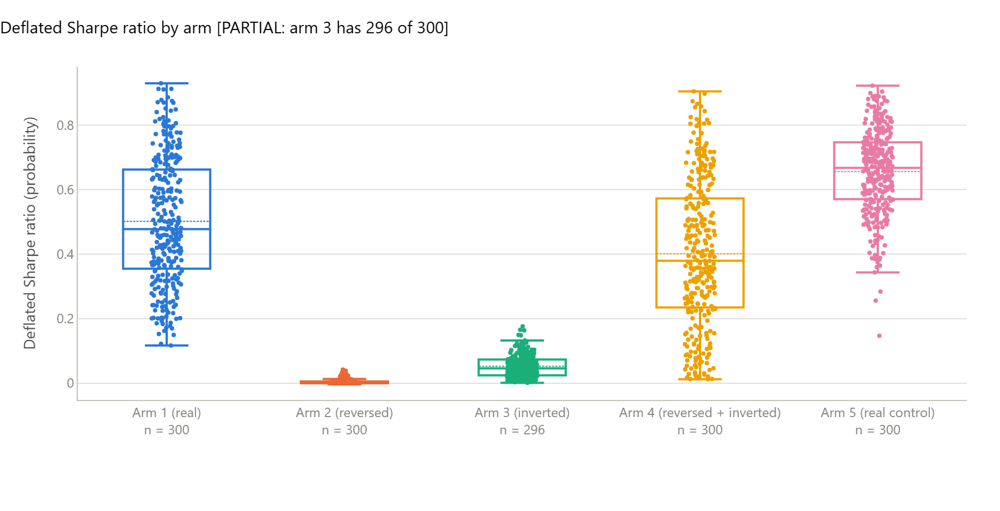
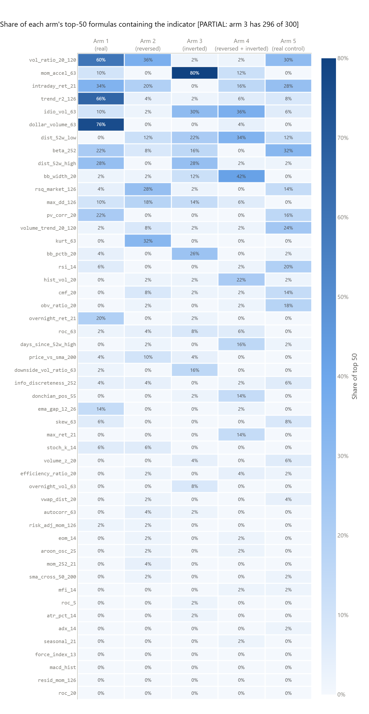
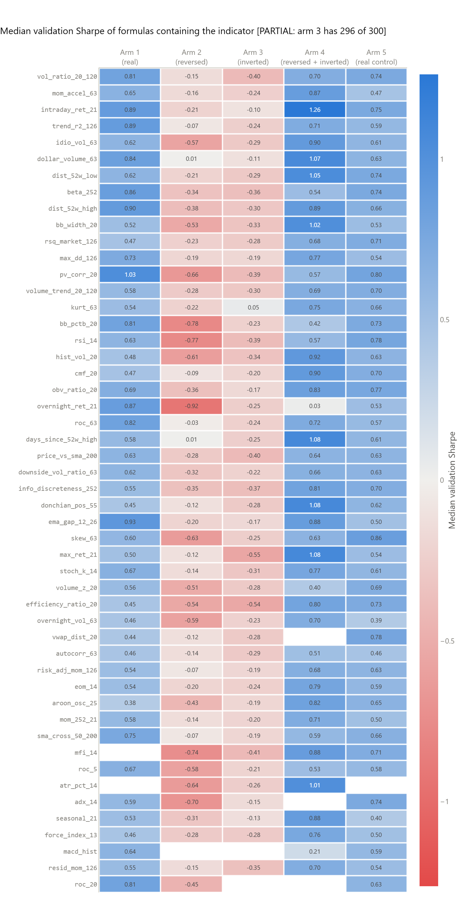
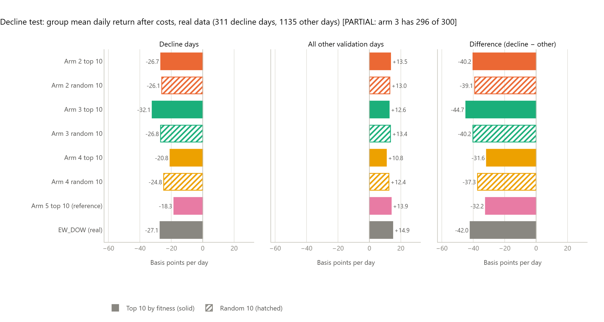

Parallel worlds: every number
Status: Research data only — holdout pending PARTIAL: arm 3 has 296 of 300
The complete results file and the methods notes written by the comparison, unchanged. Back to the overview.
Generated 2026-11-15 12:44 Central Standard Time. Analysis set: first 300 evaluated formulas per arm (by formula id). Numbers only; see methods.md for how they were produced.
PARTIAL: arm 3 has 296 of 300. Formulas in each analysis set: Arm 1 (real): 300 formulas, Arm 2 (reversed): 300 formulas, Arm 3 (inverted): 296 formulas, Arm 4 (reversed + inverted): 300 formulas, Arm 5 (real control): 300 formulas (planned: 300 each).
1. Per-arm statistics
| measure | Arm 1 (real) | Arm 2 (reversed) | Arm 3 (inverted) | Arm 4 (reversed + inverted) | Arm 5 (real control) |
|---|---|---|---|---|---|
| Formulas in the analysis set (count) | 300 | 300 | 296 | 300 | 300 |
| Evaluated formulas in the arm's database (count) | 303 | 303 | 296 | 303 | 300 |
| Formulas with deflated Sharpe >= 0.95 (count) | 0 | 0 | 0 | 0 | 0 |
| Maximum deflated Sharpe (probability) | 0.929 | 0.042 | 0.176 | 0.904 | 0.922 |
| Top-10 mean validation Sharpe (annualized) | 1.039 | 0.090 | -0.138 | 1.258 | 0.892 |
| Top-10 mean train Sharpe (annualized) | 0.765 | -0.248 | -0.543 | 0.990 | 0.861 |
| Top-10 mean gap, validation - train Sharpe | 0.274 | 0.338 | 0.405 | 0.268 | 0.030 |
| Top-10 mean deflated Sharpe (probability) | 0.804 | 0.020 | 0.091 | 0.797 | 0.843 |
| Top-10 mean validation CAGR (% per year) | 21.7% | 0.1% | -5.4% | 17.0% | 16.9% |
| Top-10 mean validation CAGR minus own EW_DOW CAGR (percentage points per year) | +8.15 pp | +7.48 pp | +1.88 pp | +6.08 pp | +3.33 pp |
| Top-10 mean size exposure (rank correlation, -1 to +1) | 0.036 | 0.011 | -0.129 | -0.092 | -0.056 |
| Formulas with validation CAGR above own EW_DOW (% of set) | 44.0% | 63.3% | 36.8% | 49.7% | 25.0% |
| Formulas with train CAGR above own EW_DOW (% of set) | 29.3% | 20.3% | 34.5% | 46.0% | 38.3% |
| Families among the top 50 (count) | 22 | 36 | 14 | 11 | 28 |
| Members of the largest family in the top 50 (count) | 19 | 5 | 36 | 40 | 9 |
| Formulas in the top-50 pool (count) | 50 | 50 | 50 | 50 | 50 |
| Formulas with a direction check (count) | 262 | 300 | 296 | 300 | 300 |
| Formulas contradicting their stated direction (count) | 16 | 15 | 7 | 41 | 37 |
| Proposals up to the last generation used (count) | 460 | 589 | 1105 | 624 | 1065 |
| of which evaluated (count) | 303 | 303 | 296 | 303 | 300 |
| of which duplicates (count) | 140 | 283 | 807 | 321 | 756 |
| of which invalid (count) | 17 | 3 | 2 | 0 | 9 |
| Generations up to the last formula in the set (count) | 66 | 74 | 143 | 81 | 134 |
| Number of that last generation | 66 | 74 | 143 | 81 | 134 |
| Failed or interrupted generations among them (count) | 5 | 0 | 0 | 0 | 0 |
2. Distributions
| measure | arm | count | mean | std | min | q1 | median | q3 | max |
|---|---|---|---|---|---|---|---|---|---|
| Validation Sharpe ratio | Arm 1 (real) | 300 | 0.673 | 0.231 | 0.171 | 0.513 | 0.644 | 0.846 | 1.293 |
| Validation Sharpe ratio | Arm 2 (reversed) | 300 | -0.342 | 0.338 | -1.704 | -0.561 | -0.303 | -0.079 | 0.263 |
| Validation Sharpe ratio | Arm 3 (inverted) | 296 | -0.287 | 0.151 | -0.837 | -0.398 | -0.276 | -0.174 | 0.049 |
| Validation Sharpe ratio | Arm 4 (reversed + inverted) | 300 | 0.751 | 0.306 | -0.048 | 0.585 | 0.757 | 0.963 | 1.448 |
| Validation Sharpe ratio | Arm 5 (real control) | 300 | 0.639 | 0.159 | 0.021 | 0.534 | 0.642 | 0.742 | 1.053 |
| Deflated Sharpe ratio (N = analysis set) | Arm 1 (real) | 300 | 0.502 | 0.195 | 0.117 | 0.356 | 0.477 | 0.662 | 0.929 |
| Deflated Sharpe ratio (N = analysis set) | Arm 2 (reversed) | 300 | 0.004 | 0.007 | 0.000 | 0.000 | 0.001 | 0.006 | 0.042 |
| Deflated Sharpe ratio (N = analysis set) | Arm 3 (inverted) | 296 | 0.052 | 0.033 | 0.001 | 0.024 | 0.046 | 0.073 | 0.176 |
| Deflated Sharpe ratio (N = analysis set) | Arm 4 (reversed + inverted) | 300 | 0.401 | 0.226 | 0.013 | 0.236 | 0.379 | 0.572 | 0.904 |
| Deflated Sharpe ratio (N = analysis set) | Arm 5 (real control) | 300 | 0.656 | 0.131 | 0.147 | 0.571 | 0.667 | 0.746 | 0.922 |
| Train Sharpe ratio | Arm 1 (real) | 300 | 0.725 | 0.178 | 0.181 | 0.609 | 0.725 | 0.843 | 1.251 |
| Train Sharpe ratio | Arm 2 (reversed) | 300 | -0.509 | 0.229 | -1.069 | -0.658 | -0.504 | -0.359 | 0.096 |
| Train Sharpe ratio | Arm 3 (inverted) | 296 | -0.573 | 0.238 | -1.231 | -0.751 | -0.567 | -0.393 | -0.028 |
| Train Sharpe ratio | Arm 4 (reversed + inverted) | 300 | 0.714 | 0.275 | 0.055 | 0.519 | 0.754 | 0.924 | 1.408 |
| Train Sharpe ratio | Arm 5 (real control) | 300 | 0.817 | 0.204 | 0.094 | 0.702 | 0.823 | 0.956 | 1.347 |
| Train-validation gap (validation − train Sharpe) | Arm 1 (real) | 300 | -0.052 | 0.308 | -0.818 | -0.276 | -0.056 | 0.136 | 0.906 |
| Train-validation gap (validation − train Sharpe) | Arm 2 (reversed) | 300 | 0.167 | 0.268 | -0.643 | 0.012 | 0.167 | 0.351 | 0.907 |
| Train-validation gap (validation − train Sharpe) | Arm 3 (inverted) | 296 | 0.286 | 0.231 | -0.276 | 0.112 | 0.305 | 0.449 | 1.004 |
| Train-validation gap (validation − train Sharpe) | Arm 4 (reversed + inverted) | 300 | 0.037 | 0.237 | -0.499 | -0.144 | 0.047 | 0.198 | 0.754 |
| Train-validation gap (validation − train Sharpe) | Arm 5 (real control) | 300 | -0.178 | 0.257 | -0.795 | -0.357 | -0.181 | -0.005 | 0.567 |
3. Comparisons with Arm 1 (the existing run)
- Arm 2 (reversed): top-10 average validation Sharpe is 0.090 vs. 1.039 in Arm 1 (real) (difference -0.949).
- Arm 2 (reversed): top-10 average train Sharpe is -0.248 vs. 0.765 in Arm 1 (real) (difference -1.013).
- Arm 2 (reversed): top-10 average train-validation gap is +0.338 vs. +0.274 in Arm 1 (real) (difference +0.064).
- Arm 2 (reversed): top-10 average deflated Sharpe is 0.020 vs. 0.804 in Arm 1 (real) (difference -0.784).
- Arm 2 (reversed): maximum deflated Sharpe is 0.042 vs. 0.929 in Arm 1 (real) (difference -0.887).
- Arm 2 (reversed): number of formulas with deflated Sharpe >= 0.95 is 0 vs. 0 in Arm 1 (real) (difference +0.000).
- Arm 2 (reversed): share of formulas with validation CAGR above its own EW_DOW is 63.3% vs. 44.0% in Arm 1 (real) (difference 19.3%).
- Arm 2 (reversed): share of formulas with train CAGR above its own EW_DOW is 20.3% vs. 29.3% in Arm 1 (real) (difference -9.0%).
- Arm 2 (reversed): largest family in the top 50 is 5 vs. 19 in Arm 1 (real) (difference -14.000).
- Arm 2 (reversed): number of families in the top 50 is 36 vs. 22 in Arm 1 (real) (difference +14.000).
- Arm 2 (reversed): median validation sharpe ratio is -0.303 vs. 0.644 in Arm 1 (real).
- Arm 2 (reversed): median deflated sharpe ratio (n = analysis set) is 0.001 vs. 0.477 in Arm 1 (real).
- Arm 2 (reversed): median train sharpe ratio is -0.504 vs. 0.725 in Arm 1 (real).
- Arm 2 (reversed): median train-validation gap (validation − train sharpe) is 0.167 vs. -0.056 in Arm 1 (real).
- Arm 3 (inverted): top-10 average validation Sharpe is -0.138 vs. 1.039 in Arm 1 (real) (difference -1.177).
- Arm 3 (inverted): top-10 average train Sharpe is -0.543 vs. 0.765 in Arm 1 (real) (difference -1.307).
- Arm 3 (inverted): top-10 average train-validation gap is +0.405 vs. +0.274 in Arm 1 (real) (difference +0.130).
- Arm 3 (inverted): top-10 average deflated Sharpe is 0.091 vs. 0.804 in Arm 1 (real) (difference -0.712).
- Arm 3 (inverted): maximum deflated Sharpe is 0.176 vs. 0.929 in Arm 1 (real) (difference -0.753).
- Arm 3 (inverted): number of formulas with deflated Sharpe >= 0.95 is 0 vs. 0 in Arm 1 (real) (difference +0.000).
- Arm 3 (inverted): share of formulas with validation CAGR above its own EW_DOW is 36.8% vs. 44.0% in Arm 1 (real) (difference -7.2%).
- Arm 3 (inverted): share of formulas with train CAGR above its own EW_DOW is 34.5% vs. 29.3% in Arm 1 (real) (difference 5.1%).
- Arm 3 (inverted): largest family in the top 50 is 36 vs. 19 in Arm 1 (real) (difference +17.000).
- Arm 3 (inverted): number of families in the top 50 is 14 vs. 22 in Arm 1 (real) (difference -8.000).
- Arm 3 (inverted): median validation sharpe ratio is -0.276 vs. 0.644 in Arm 1 (real).
- Arm 3 (inverted): median deflated sharpe ratio (n = analysis set) is 0.046 vs. 0.477 in Arm 1 (real).
- Arm 3 (inverted): median train sharpe ratio is -0.567 vs. 0.725 in Arm 1 (real).
- Arm 3 (inverted): median train-validation gap (validation − train sharpe) is 0.305 vs. -0.056 in Arm 1 (real).
- Arm 4 (reversed + inverted): top-10 average validation Sharpe is 1.258 vs. 1.039 in Arm 1 (real) (difference +0.219).
- Arm 4 (reversed + inverted): top-10 average train Sharpe is 0.990 vs. 0.765 in Arm 1 (real) (difference +0.226).
- Arm 4 (reversed + inverted): top-10 average train-validation gap is +0.268 vs. +0.274 in Arm 1 (real) (difference -0.007).
- Arm 4 (reversed + inverted): top-10 average deflated Sharpe is 0.797 vs. 0.804 in Arm 1 (real) (difference -0.006).
- Arm 4 (reversed + inverted): maximum deflated Sharpe is 0.904 vs. 0.929 in Arm 1 (real) (difference -0.025).
- Arm 4 (reversed + inverted): number of formulas with deflated Sharpe >= 0.95 is 0 vs. 0 in Arm 1 (real) (difference +0.000).
- Arm 4 (reversed + inverted): share of formulas with validation CAGR above its own EW_DOW is 49.7% vs. 44.0% in Arm 1 (real) (difference 5.7%).
- Arm 4 (reversed + inverted): share of formulas with train CAGR above its own EW_DOW is 46.0% vs. 29.3% in Arm 1 (real) (difference 16.7%).
- Arm 4 (reversed + inverted): largest family in the top 50 is 40 vs. 19 in Arm 1 (real) (difference +21.000).
- Arm 4 (reversed + inverted): number of families in the top 50 is 11 vs. 22 in Arm 1 (real) (difference -11.000).
- Arm 4 (reversed + inverted): median validation sharpe ratio is 0.757 vs. 0.644 in Arm 1 (real).
- Arm 4 (reversed + inverted): median deflated sharpe ratio (n = analysis set) is 0.379 vs. 0.477 in Arm 1 (real).
- Arm 4 (reversed + inverted): median train sharpe ratio is 0.754 vs. 0.725 in Arm 1 (real).
- Arm 4 (reversed + inverted): median train-validation gap (validation − train sharpe) is 0.047 vs. -0.056 in Arm 1 (real).
- Arm 5 (real control): top-10 average validation Sharpe is 0.892 vs. 1.039 in Arm 1 (real) (difference -0.147).
- Arm 5 (real control): top-10 average train Sharpe is 0.861 vs. 0.765 in Arm 1 (real) (difference +0.097).
- Arm 5 (real control): top-10 average train-validation gap is +0.030 vs. +0.274 in Arm 1 (real) (difference -0.244).
- Arm 5 (real control): top-10 average deflated Sharpe is 0.843 vs. 0.804 in Arm 1 (real) (difference +0.039).
- Arm 5 (real control): maximum deflated Sharpe is 0.922 vs. 0.929 in Arm 1 (real) (difference -0.007).
- Arm 5 (real control): number of formulas with deflated Sharpe >= 0.95 is 0 vs. 0 in Arm 1 (real) (difference +0.000).
- Arm 5 (real control): share of formulas with validation CAGR above its own EW_DOW is 25.0% vs. 44.0% in Arm 1 (real) (difference -19.0%).
- Arm 5 (real control): share of formulas with train CAGR above its own EW_DOW is 38.3% vs. 29.3% in Arm 1 (real) (difference 9.0%).
- Arm 5 (real control): largest family in the top 50 is 9 vs. 19 in Arm 1 (real) (difference -10.000).
- Arm 5 (real control): number of families in the top 50 is 28 vs. 22 in Arm 1 (real) (difference +6.000).
- Arm 5 (real control): median validation sharpe ratio is 0.642 vs. 0.644 in Arm 1 (real).
- Arm 5 (real control): median deflated sharpe ratio (n = analysis set) is 0.667 vs. 0.477 in Arm 1 (real).
- Arm 5 (real control): median train sharpe ratio is 0.823 vs. 0.725 in Arm 1 (real).
- Arm 5 (real control): median train-validation gap (validation − train sharpe) is -0.181 vs. -0.056 in Arm 1 (real).
3a. Comparisons with Arm 5 (the clean real-data control)
- Arm 1 (real): top-10 average validation Sharpe is 1.039 vs. 0.892 in Arm 5 (real control) (difference +0.147).
- Arm 1 (real): top-10 average train Sharpe is 0.765 vs. 0.861 in Arm 5 (real control) (difference -0.097).
- Arm 1 (real): top-10 average train-validation gap is +0.274 vs. +0.030 in Arm 5 (real control) (difference +0.244).
- Arm 1 (real): top-10 average deflated Sharpe is 0.804 vs. 0.843 in Arm 5 (real control) (difference -0.039).
- Arm 1 (real): maximum deflated Sharpe is 0.929 vs. 0.922 in Arm 5 (real control) (difference +0.007).
- Arm 1 (real): number of formulas with deflated Sharpe >= 0.95 is 0 vs. 0 in Arm 5 (real control) (difference +0.000).
- Arm 1 (real): share of formulas with validation CAGR above its own EW_DOW is 44.0% vs. 25.0% in Arm 5 (real control) (difference 19.0%).
- Arm 1 (real): share of formulas with train CAGR above its own EW_DOW is 29.3% vs. 38.3% in Arm 5 (real control) (difference -9.0%).
- Arm 1 (real): largest family in the top 50 is 19 vs. 9 in Arm 5 (real control) (difference +10.000).
- Arm 1 (real): number of families in the top 50 is 22 vs. 28 in Arm 5 (real control) (difference -6.000).
- Arm 1 (real): median validation sharpe ratio is 0.644 vs. 0.642 in Arm 5 (real control).
- Arm 1 (real): median deflated sharpe ratio (n = analysis set) is 0.477 vs. 0.667 in Arm 5 (real control).
- Arm 1 (real): median train sharpe ratio is 0.725 vs. 0.823 in Arm 5 (real control).
- Arm 1 (real): median train-validation gap (validation − train sharpe) is -0.056 vs. -0.181 in Arm 5 (real control).
- Arm 2 (reversed): top-10 average validation Sharpe is 0.090 vs. 0.892 in Arm 5 (real control) (difference -0.802).
- Arm 2 (reversed): top-10 average train Sharpe is -0.248 vs. 0.861 in Arm 5 (real control) (difference -1.110).
- Arm 2 (reversed): top-10 average train-validation gap is +0.338 vs. +0.030 in Arm 5 (real control) (difference +0.308).
- Arm 2 (reversed): top-10 average deflated Sharpe is 0.020 vs. 0.843 in Arm 5 (real control) (difference -0.823).
- Arm 2 (reversed): maximum deflated Sharpe is 0.042 vs. 0.922 in Arm 5 (real control) (difference -0.880).
- Arm 2 (reversed): number of formulas with deflated Sharpe >= 0.95 is 0 vs. 0 in Arm 5 (real control) (difference +0.000).
- Arm 2 (reversed): share of formulas with validation CAGR above its own EW_DOW is 63.3% vs. 25.0% in Arm 5 (real control) (difference 38.3%).
- Arm 2 (reversed): share of formulas with train CAGR above its own EW_DOW is 20.3% vs. 38.3% in Arm 5 (real control) (difference -18.0%).
- Arm 2 (reversed): largest family in the top 50 is 5 vs. 9 in Arm 5 (real control) (difference -4.000).
- Arm 2 (reversed): number of families in the top 50 is 36 vs. 28 in Arm 5 (real control) (difference +8.000).
- Arm 2 (reversed): median validation sharpe ratio is -0.303 vs. 0.642 in Arm 5 (real control).
- Arm 2 (reversed): median deflated sharpe ratio (n = analysis set) is 0.001 vs. 0.667 in Arm 5 (real control).
- Arm 2 (reversed): median train sharpe ratio is -0.504 vs. 0.823 in Arm 5 (real control).
- Arm 2 (reversed): median train-validation gap (validation − train sharpe) is 0.167 vs. -0.181 in Arm 5 (real control).
- Arm 3 (inverted): top-10 average validation Sharpe is -0.138 vs. 0.892 in Arm 5 (real control) (difference -1.030).
- Arm 3 (inverted): top-10 average train Sharpe is -0.543 vs. 0.861 in Arm 5 (real control) (difference -1.404).
- Arm 3 (inverted): top-10 average train-validation gap is +0.405 vs. +0.030 in Arm 5 (real control) (difference +0.374).
- Arm 3 (inverted): top-10 average deflated Sharpe is 0.091 vs. 0.843 in Arm 5 (real control) (difference -0.751).
- Arm 3 (inverted): maximum deflated Sharpe is 0.176 vs. 0.922 in Arm 5 (real control) (difference -0.746).
- Arm 3 (inverted): number of formulas with deflated Sharpe >= 0.95 is 0 vs. 0 in Arm 5 (real control) (difference +0.000).
- Arm 3 (inverted): share of formulas with validation CAGR above its own EW_DOW is 36.8% vs. 25.0% in Arm 5 (real control) (difference 11.8%).
- Arm 3 (inverted): share of formulas with train CAGR above its own EW_DOW is 34.5% vs. 38.3% in Arm 5 (real control) (difference -3.9%).
- Arm 3 (inverted): largest family in the top 50 is 36 vs. 9 in Arm 5 (real control) (difference +27.000).
- Arm 3 (inverted): number of families in the top 50 is 14 vs. 28 in Arm 5 (real control) (difference -14.000).
- Arm 3 (inverted): median validation sharpe ratio is -0.276 vs. 0.642 in Arm 5 (real control).
- Arm 3 (inverted): median deflated sharpe ratio (n = analysis set) is 0.046 vs. 0.667 in Arm 5 (real control).
- Arm 3 (inverted): median train sharpe ratio is -0.567 vs. 0.823 in Arm 5 (real control).
- Arm 3 (inverted): median train-validation gap (validation − train sharpe) is 0.305 vs. -0.181 in Arm 5 (real control).
- Arm 4 (reversed + inverted): top-10 average validation Sharpe is 1.258 vs. 0.892 in Arm 5 (real control) (difference +0.366).
- Arm 4 (reversed + inverted): top-10 average train Sharpe is 0.990 vs. 0.861 in Arm 5 (real control) (difference +0.129).
- Arm 4 (reversed + inverted): top-10 average train-validation gap is +0.268 vs. +0.030 in Arm 5 (real control) (difference +0.237).
- Arm 4 (reversed + inverted): top-10 average deflated Sharpe is 0.797 vs. 0.843 in Arm 5 (real control) (difference -0.045).
- Arm 4 (reversed + inverted): maximum deflated Sharpe is 0.904 vs. 0.922 in Arm 5 (real control) (difference -0.018).
- Arm 4 (reversed + inverted): number of formulas with deflated Sharpe >= 0.95 is 0 vs. 0 in Arm 5 (real control) (difference +0.000).
- Arm 4 (reversed + inverted): share of formulas with validation CAGR above its own EW_DOW is 49.7% vs. 25.0% in Arm 5 (real control) (difference 24.7%).
- Arm 4 (reversed + inverted): share of formulas with train CAGR above its own EW_DOW is 46.0% vs. 38.3% in Arm 5 (real control) (difference 7.7%).
- Arm 4 (reversed + inverted): largest family in the top 50 is 40 vs. 9 in Arm 5 (real control) (difference +31.000).
- Arm 4 (reversed + inverted): number of families in the top 50 is 11 vs. 28 in Arm 5 (real control) (difference -17.000).
- Arm 4 (reversed + inverted): median validation sharpe ratio is 0.757 vs. 0.642 in Arm 5 (real control).
- Arm 4 (reversed + inverted): median deflated sharpe ratio (n = analysis set) is 0.379 vs. 0.667 in Arm 5 (real control).
- Arm 4 (reversed + inverted): median train sharpe ratio is 0.754 vs. 0.823 in Arm 5 (real control).
- Arm 4 (reversed + inverted): median train-validation gap (validation − train sharpe) is 0.047 vs. -0.181 in Arm 5 (real control).
4. Pairwise tests (two-sided Mann–Whitney U; Kolmogorov–Smirnov; no multiple-comparison correction)
| arm_a | arm_b | measure | n_a | n_b | median_a | median_b | median_difference_a_minus_b | mean_difference_a_minus_b | mann_whitney_u | mann_whitney_p | ks_statistic | ks_p |
|---|---|---|---|---|---|---|---|---|---|---|---|---|
| real | reversed | Validation Sharpe ratio | 300 | 300 | 0.644 | -0.303 | 0.947 | 1.015 | 89977 | 0.000 | 0.987 | 0.000 |
| real | reversed | Deflated Sharpe ratio (N = analysis set) | 300 | 300 | 0.477 | 0.001 | 0.476 | 0.497 | 90000 | 0.000 | 1 | 0.000 |
| real | reversed | Train Sharpe ratio | 300 | 300 | 0.725 | -0.504 | 1.229 | 1.234 | 90000 | 0.000 | 1 | 0.000 |
| real | reversed | Train-validation gap (validation − train Sharpe) | 300 | 300 | -0.056 | 0.167 | -0.224 | -0.219 | 25969 | 0.000 | 0.353 | 0.000 |
| real | inverted | Validation Sharpe ratio | 300 | 296 | 0.644 | -0.276 | 0.920 | 0.960 | 88800 | 0.000 | 1 | 0.000 |
| real | inverted | Deflated Sharpe ratio (N = analysis set) | 300 | 296 | 0.477 | 0.046 | 0.431 | 0.449 | 88768 | 0.000 | 0.983 | 0.000 |
| real | inverted | Train Sharpe ratio | 300 | 296 | 0.725 | -0.567 | 1.292 | 1.298 | 88800 | 0.000 | 1 | 0.000 |
| real | inverted | Train-validation gap (validation − train Sharpe) | 300 | 296 | -0.056 | 0.305 | -0.361 | -0.337 | 16935 | 0.000 | 0.490 | 0.000 |
| real | reversed_inverted | Validation Sharpe ratio | 300 | 300 | 0.644 | 0.757 | -0.113 | -0.078 | 36171 | 0.000 | 0.207 | 0.000 |
| real | reversed_inverted | Deflated Sharpe ratio (N = analysis set) | 300 | 300 | 0.477 | 0.379 | 0.098 | 0.101 | 56499 | 0.000 | 0.220 | 0.000 |
| real | reversed_inverted | Train Sharpe ratio | 300 | 300 | 0.725 | 0.754 | -0.029 | 0.011 | 44994 | 0.998 | 0.147 | 0.003 |
| real | reversed_inverted | Train-validation gap (validation − train Sharpe) | 300 | 300 | -0.056 | 0.047 | -0.103 | -0.088 | 36268 | 0.000 | 0.173 | 0.000 |
| real | real_control | Validation Sharpe ratio | 300 | 300 | 0.644 | 0.642 | 0.001 | 0.034 | 47891 | 0.173 | 0.163 | 0.001 |
| real | real_control | Deflated Sharpe ratio (N = analysis set) | 300 | 300 | 0.477 | 0.667 | -0.190 | -0.154 | 23894 | 0.000 | 0.433 | 0.000 |
| real | real_control | Train Sharpe ratio | 300 | 300 | 0.725 | 0.823 | -0.098 | -0.092 | 32303 | 0.000 | 0.227 | 0.000 |
| real | real_control | Train-validation gap (validation − train Sharpe) | 300 | 300 | -0.056 | -0.181 | 0.125 | 0.126 | 55491 | 0.000 | 0.197 | 0.000 |
| reversed | inverted | Validation Sharpe ratio | 300 | 296 | -0.303 | -0.276 | -0.027 | -0.054 | 42635 | 0.401 | 0.216 | 0.000 |
| reversed | inverted | Deflated Sharpe ratio (N = analysis set) | 300 | 296 | 0.001 | 0.046 | -0.045 | -0.048 | 2578 | 0.000 | 0.825 | 0.000 |
| reversed | inverted | Train Sharpe ratio | 300 | 296 | -0.504 | -0.567 | 0.063 | 0.064 | 51127 | 0.001 | 0.159 | 0.001 |
| reversed | inverted | Train-validation gap (validation − train Sharpe) | 300 | 296 | 0.167 | 0.305 | -0.137 | -0.119 | 32886 | 0.000 | 0.212 | 0.000 |
| reversed | reversed_inverted | Validation Sharpe ratio | 300 | 300 | -0.303 | 0.757 | -1.060 | -1.092 | 498 | 0.000 | 0.930 | 0.000 |
| reversed | reversed_inverted | Deflated Sharpe ratio (N = analysis set) | 300 | 300 | 0.001 | 0.379 | -0.378 | -0.397 | 201 | 0.000 | 0.957 | 0.000 |
| reversed | reversed_inverted | Train Sharpe ratio | 300 | 300 | -0.504 | 0.754 | -1.258 | -1.223 | 7 | 0.000 | 0.990 | 0.000 |
| reversed | reversed_inverted | Train-validation gap (validation − train Sharpe) | 300 | 300 | 0.167 | 0.047 | 0.121 | 0.130 | 58189 | 0.000 | 0.223 | 0.000 |
| reversed | real_control | Validation Sharpe ratio | 300 | 300 | -0.303 | 0.642 | -0.945 | -0.981 | 49 | 0.000 | 0.990 | 0.000 |
| reversed | real_control | Deflated Sharpe ratio (N = analysis set) | 300 | 300 | 0.001 | 0.667 | -0.666 | -0.651 | 0 | 0.000 | 1 | 0.000 |
| reversed | real_control | Train Sharpe ratio | 300 | 300 | -0.504 | 0.823 | -1.327 | -1.325 | 1 | 0.000 | 0.997 | 0.000 |
| reversed | real_control | Train-validation gap (validation − train Sharpe) | 300 | 300 | 0.167 | -0.181 | 0.349 | 0.345 | 74234 | 0.000 | 0.523 | 0.000 |
| inverted | reversed_inverted | Validation Sharpe ratio | 296 | 300 | -0.276 | 0.757 | -1.033 | -1.038 | 32 | 0.000 | 0.980 | 0.000 |
| inverted | reversed_inverted | Deflated Sharpe ratio (N = analysis set) | 296 | 300 | 0.046 | 0.379 | -0.333 | -0.349 | 5066 | 0.000 | 0.830 | 0.000 |
| inverted | reversed_inverted | Train Sharpe ratio | 296 | 300 | -0.567 | 0.754 | -1.321 | -1.287 | 0 | 0.000 | 1 | 0.000 |
| inverted | reversed_inverted | Train-validation gap (validation − train Sharpe) | 296 | 300 | 0.305 | 0.047 | 0.258 | 0.249 | 68372 | 0.000 | 0.409 | 0.000 |
| inverted | real_control | Validation Sharpe ratio | 296 | 300 | -0.276 | 0.642 | -0.919 | -0.926 | 3 | 0.000 | 0.997 | 0.000 |
| inverted | real_control | Deflated Sharpe ratio (N = analysis set) | 296 | 300 | 0.046 | 0.667 | -0.621 | -0.603 | 5 | 0.000 | 0.997 | 0.000 |
| inverted | real_control | Train Sharpe ratio | 296 | 300 | -0.567 | 0.823 | -1.390 | -1.390 | 0 | 0.000 | 1 | 0.000 |
| inverted | real_control | Train-validation gap (validation − train Sharpe) | 296 | 300 | 0.305 | -0.181 | 0.486 | 0.463 | 80637 | 0.000 | 0.642 | 0.000 |
| reversed_inverted | real_control | Validation Sharpe ratio | 300 | 300 | 0.757 | 0.642 | 0.115 | 0.112 | 58417 | 0.000 | 0.303 | 0.000 |
| reversed_inverted | real_control | Deflated Sharpe ratio (N = analysis set) | 300 | 300 | 0.379 | 0.667 | -0.288 | -0.255 | 16053 | 0.000 | 0.560 | 0.000 |
| reversed_inverted | real_control | Train Sharpe ratio | 300 | 300 | 0.754 | 0.823 | -0.069 | -0.103 | 35284 | 0.000 | 0.230 | 0.000 |
| reversed_inverted | real_control | Train-validation gap (validation − train Sharpe) | 300 | 300 | 0.047 | -0.181 | 0.228 | 0.214 | 65328 | 0.000 | 0.353 | 0.000 |
5. Top 10 by fitness (recomputed within the analysis set)
| arm | rank | formula_id | expression | rebalance | fitness | val_sharpe | train_sharpe | gap | dsr | val_cagr | val_cagr_minus_own_ew_dow | size_exposure |
|---|---|---|---|---|---|---|---|---|---|---|---|---|
| Arm 1 (real) | 1 | 273 | dollar_volume_63 * trend_r2_126 + (dist_52w_high + intraday_ret_21) * vol_ratio_20_120 + (dist_52w_high + overnight_ret_21) * pv_corr_20 | M | 0.496 | 1.144 | 0.688 | 0.457 | 0.869 | 0.252 | 0.117 | 0.047 |
| Arm 1 (real) | 2 | 133 | dollar_volume_63 * trend_r2_126 + overnight_ret_21 * vol_ratio_20_120 + pv_corr_20 * (1 - beta_252) | M | 0.481 | 1.048 | 0.740 | 0.308 | 0.814 | 0.207 | 0.072 | 0.032 |
| Arm 1 (real) | 3 | 51 | dollar_volume_63 * (trend_r2_126 + ema_gap_12_26) | M | 0.455 | 0.990 | 0.655 | 0.334 | 0.772 | 0.219 | 0.084 | 0.091 |
| Arm 1 (real) | 4 | 246 | max_dd_126 * (1 - dollar_volume_63) | W | 0.454 | 0.981 | 0.818 | 0.162 | 0.772 | 0.167 | 0.032 | -0.129 |
| Arm 1 (real) | 5 | 197 | dollar_volume_63 * trend_r2_126 + dollar_volume_63 * ema_gap_12_26 + intraday_ret_21 * vol_ratio_20_120 | M | 0.430 | 1.067 | 0.769 | 0.298 | 0.824 | 0.233 | 0.097 | 0.076 |
| Arm 1 (real) | 6 | 173 | dollar_volume_63 * trend_r2_126 + pv_corr_20 * (1 - beta_252) | M | 0.369 | 0.995 | 0.784 | 0.211 | 0.777 | 0.190 | 0.054 | 0.027 |
| Arm 1 (real) | 7 | 274 | dollar_volume_63 * trend_r2_126 * (1 - vol_ratio_20_120) + (dist_52w_high + intraday_ret_21) * vol_ratio_20_120 | M | 0.365 | 1.110 | 0.930 | 0.180 | 0.849 | 0.249 | 0.114 | 0.050 |
| Arm 1 (real) | 8 | 172 | dollar_volume_63 * trend_r2_126 + (dist_52w_high + mom_accel_63) * vol_ratio_20_120 | M | 0.361 | 1.147 | 0.644 | 0.502 | 0.869 | 0.262 | 0.126 | 0.065 |
| Arm 1 (real) | 9 | 101 | dollar_volume_63 * trend_r2_126 + (dist_52w_high + overnight_ret_21) * vol_ratio_20_120 | M | 0.358 | 1.045 | 0.726 | 0.319 | 0.812 | 0.226 | 0.090 | 0.070 |
| Arm 1 (real) | 10 | 314 | skew_63 * (1 - idio_vol_63) | M | 0.352 | 0.864 | 0.892 | -0.028 | 0.679 | 0.165 | 0.029 | 0.032 |
| Arm 2 (reversed) | 1 | 110 | intraday_ret_21 + (-kurt_63) + (-rsq_market_126) | M | -0.707 | 0.176 | -0.091 | 0.268 | 0.027 | 0.016 | 0.090 | -0.032 |
| Arm 2 (reversed) | 2 | 342 | volume_trend_20_120 + intraday_ret_21 + (-kurt_63) | M | -0.904 | 0.107 | 0.067 | 0.040 | 0.018 | 0.002 | 0.076 | -0.025 |
| Arm 2 (reversed) | 3 | 502 | mom_252_21 + vol_ratio_20_120 | M | -0.970 | 0.137 | -0.334 | 0.471 | 0.022 | 0.009 | 0.083 | 0.040 |
| Arm 2 (reversed) | 4 | 59 | -rsq_market_126 | M | -0.980 | -0.099 | -0.530 | 0.431 | 0.005 | -0.023 | 0.052 | 0.036 |
| Arm 2 (reversed) | 5 | 103 | intraday_ret_21 + (-kurt_63) | M | -1.032 | 0.082 | -0.269 | 0.351 | 0.016 | -0.003 | 0.071 | -0.050 |
| Arm 2 (reversed) | 6 | 252 | (-max_dd_126) + vol_ratio_20_120 + (-kurt_63) + (-rsq_market_126) | M | -1.036 | 0.187 | -0.402 | 0.590 | 0.028 | 0.018 | 0.092 | 0.033 |
| Arm 2 (reversed) | 7 | 206 | dist_52w_low + (-kurt_63) + vol_ratio_20_120 | M | -1.056 | 0.135 | -0.188 | 0.323 | 0.021 | 0.007 | 0.081 | 0.014 |
| Arm 2 (reversed) | 8 | 146 | dist_52w_low + vol_ratio_20_120 | M | -1.059 | 0.180 | -0.216 | 0.397 | 0.027 | 0.016 | 0.091 | 0.061 |
| Arm 2 (reversed) | 9 | 8 | -price_vs_sma_200 | M | -1.063 | -0.218 | -0.357 | 0.139 | 0.002 | -0.058 | 0.016 | -0.020 |
| Arm 2 (reversed) | 10 | 170 | (-max_dd_126) + vol_ratio_20_120 | M | -1.075 | 0.210 | -0.164 | 0.373 | 0.032 | 0.022 | 0.097 | 0.054 |
| Arm 3 (inverted) | 1 | 602 | mom_accel_63 + (-dist_52w_high) + (-dist_52w_low) | M | -0.927 | -0.102 | -0.504 | 0.402 | 0.099 | -0.052 | 0.021 | -0.221 |
| Arm 3 (inverted) | 2 | 546 | mom_accel_63 + (-dist_52w_high) | M | -0.935 | -0.135 | -0.323 | 0.188 | 0.086 | -0.066 | 0.007 | -0.145 |
| Arm 3 (inverted) | 3 | 85 | mom_accel_63 + (-bb_width_20) | M | -1.069 | -0.172 | -0.611 | 0.439 | 0.074 | -0.059 | 0.014 | -0.082 |
| Arm 3 (inverted) | 4 | 219 | mom_accel_63 + (-dist_52w_low) | M | -1.097 | -0.030 | -0.706 | 0.677 | 0.132 | -0.031 | 0.043 | -0.187 |
| Arm 3 (inverted) | 5 | 608 | mom_accel_63 + (-dist_52w_high) + (-bb_width_20) | M | -1.120 | -0.337 | -0.567 | 0.229 | 0.033 | -0.098 | -0.025 | -0.176 |
| Arm 3 (inverted) | 6 | 233 | mom_accel_63 + (-overnight_vol_63) | M | -1.139 | -0.044 | -0.668 | 0.624 | 0.125 | -0.027 | 0.047 | -0.132 |
| Arm 3 (inverted) | 7 | 972 | mom_accel_63 + (-donchian_pos_55) | M | -1.164 | -0.216 | -0.442 | 0.226 | 0.061 | -0.070 | 0.003 | -0.118 |
| Arm 3 (inverted) | 8 | 1006 | mom_accel_63 + volume_z_20 + (-max_dd_126) | M | -1.199 | -0.090 | -0.472 | 0.382 | 0.105 | -0.053 | 0.020 | -0.042 |
| Arm 3 (inverted) | 9 | 319 | mom_accel_63 + (-bb_pctb_20) + (-idio_vol_63) + (-downside_vol_ratio_63) + (-beta_252) | M | -1.210 | 0.001 | -0.449 | 0.450 | 0.148 | -0.019 | 0.054 | -0.097 |
| Arm 3 (inverted) | 10 | 283 | mom_accel_63 + (-atr_pct_14) | M | -1.214 | -0.256 | -0.687 | 0.431 | 0.050 | -0.070 | 0.003 | -0.085 |
| Arm 4 (reversed + inverted) | 1 | 138 | donchian_pos_55 + (-bb_width_20) | M | 0.695 | 1.431 | 0.938 | 0.494 | 0.897 | 0.198 | 0.089 | -0.037 |
| Arm 4 (reversed + inverted) | 2 | 600 | (-dist_52w_low) + intraday_ret_21 + (-days_since_52w_high) | M | 0.663 | 1.448 | 0.938 | 0.510 | 0.904 | 0.212 | 0.102 | -0.046 |
| Arm 4 (reversed + inverted) | 3 | 616 | (-dist_52w_low) + intraday_ret_21 + (-bb_width_20) + (-days_since_52w_high) | M | 0.655 | 1.253 | 1.034 | 0.219 | 0.804 | 0.162 | 0.053 | -0.083 |
| Arm 4 (reversed + inverted) | 4 | 513 | ema_gap_12_26 + (-bb_width_20) | M | 0.639 | 1.257 | 0.951 | 0.307 | 0.806 | 0.183 | 0.074 | -0.035 |
| Arm 4 (reversed + inverted) | 5 | 584 | intraday_ret_21 + (-dist_52w_low) + (-bb_width_20) | M | 0.637 | 1.376 | 1.296 | 0.080 | 0.874 | 0.188 | 0.079 | -0.155 |
| Arm 4 (reversed + inverted) | 6 | 296 | (-days_since_52w_high) - hist_vol_20 + (-dist_52w_low) | M | 0.630 | 1.165 | 0.877 | 0.287 | 0.742 | 0.145 | 0.035 | -0.122 |
| Arm 4 (reversed + inverted) | 7 | 566 | (-dist_52w_low) + intraday_ret_21 | M | 0.628 | 1.275 | 1.196 | 0.079 | 0.818 | 0.197 | 0.087 | -0.143 |
| Arm 4 (reversed + inverted) | 8 | 165 | mom_accel_63 + (-max_ret_21) + (-idio_vol_63) | M | 0.627 | 1.209 | 0.973 | 0.236 | 0.775 | 0.155 | 0.046 | -0.141 |
| Arm 4 (reversed + inverted) | 9 | 213 | (-days_since_52w_high) - hist_vol_20 | M | 0.624 | 1.085 | 0.910 | 0.175 | 0.678 | 0.132 | 0.022 | -0.016 |
| Arm 4 (reversed + inverted) | 10 | 4 | -idio_vol_63 | M | 0.603 | 1.080 | 0.789 | 0.291 | 0.675 | 0.132 | 0.022 | -0.138 |
| Arm 5 (real control) | 1 | 854 | volume_trend_20_120 + intraday_ret_21 | M | 0.469 | 0.954 | 0.742 | 0.212 | 0.881 | 0.204 | 0.069 | 0.022 |
| Arm 5 (real control) | 2 | 922 | (-rsq_market_126) + intraday_ret_21 | M | 0.467 | 0.907 | 0.919 | -0.012 | 0.857 | 0.156 | 0.020 | 0.062 |
| Arm 5 (real control) | 3 | 20 | cmf_20 | M | 0.460 | 0.826 | 0.733 | 0.094 | 0.809 | 0.157 | 0.022 | -0.005 |
| Arm 5 (real control) | 4 | 396 | (-rsi_14) + obv_ratio_20 + (-vol_ratio_20_120) | M | 0.459 | 0.970 | 1.028 | -0.058 | 0.889 | 0.194 | 0.059 | -0.041 |
| Arm 5 (real control) | 5 | 466 | (-rsi_14) + obv_ratio_20 + (-vol_ratio_20_120) + (-beta_252) + (-dist_52w_low) + (-info_discreteness_252) | M | 0.451 | 1.053 | 0.901 | 0.152 | 0.922 | 0.180 | 0.044 | -0.126 |
| Arm 5 (real control) | 6 | 872 | volume_trend_20_120 + intraday_ret_21 + (-beta_252) | M | 0.444 | 0.776 | 0.916 | -0.140 | 0.774 | 0.128 | -0.008 | -0.067 |
| Arm 5 (real control) | 7 | 269 | (-rsi_14) + obv_ratio_20 | M | 0.404 | 0.943 | 0.735 | 0.208 | 0.876 | 0.196 | 0.060 | -0.033 |
| Arm 5 (real control) | 8 | 1021 | cmf_20 + (-idio_vol_63) | M | 0.380 | 0.874 | 0.765 | 0.109 | 0.835 | 0.153 | 0.018 | -0.164 |
| Arm 5 (real control) | 9 | 956 | (-beta_252) + rsq_market_126 | M | 0.379 | 0.761 | 0.827 | -0.066 | 0.760 | 0.149 | 0.013 | -0.217 |
| Arm 5 (real control) | 10 | 591 | cmf_20 + intraday_ret_21 | M | 0.378 | 0.852 | 1.046 | -0.194 | 0.825 | 0.171 | 0.035 | 0.006 |
6. Top 5 families per arm (top 50 by fitness)
| arm | family_rank | members_in_top50 | representative_id | representative_expression | indicators |
|---|---|---|---|---|---|
| Arm 1 (real) | 1 | 19 | 189 | dollar_volume_63 * trend_r2_126 + (overnight_ret_21 + intraday_ret_21) * vol_ratio_20_120 | dollar_volume_63, intraday_ret_21, overnight_ret_21, trend_r2_126, vol_ratio_20_120 |
| Arm 1 (real) | 2 | 10 | 133 | dollar_volume_63 * trend_r2_126 + overnight_ret_21 * vol_ratio_20_120 + pv_corr_20 * (1 - beta_252) | beta_252, dollar_volume_63, overnight_ret_21, pv_corr_20, trend_r2_126, vol_ratio_20_120 |
| Arm 1 (real) | 3 | 2 | 51 | dollar_volume_63 * (trend_r2_126 + ema_gap_12_26) | dollar_volume_63, ema_gap_12_26, trend_r2_126 |
| Arm 1 (real) | 4 | 1 | 273 | dollar_volume_63 * trend_r2_126 + (dist_52w_high + intraday_ret_21) * vol_ratio_20_120 + (dist_52w_high + overnight_ret_21) * pv_corr_20 | dist_52w_high, dollar_volume_63, intraday_ret_21, overnight_ret_21, pv_corr_20, trend_r2_126, vol_ratio_20_120 |
| Arm 1 (real) | 5 | 1 | 246 | max_dd_126 * (1 - dollar_volume_63) | dollar_volume_63, max_dd_126 |
| Arm 2 (reversed) | 1 | 5 | 170 | (-max_dd_126) + vol_ratio_20_120 | max_dd_126, vol_ratio_20_120 |
| Arm 2 (reversed) | 2 | 4 | 110 | intraday_ret_21 + (-kurt_63) + (-rsq_market_126) | intraday_ret_21, kurt_63, rsq_market_126 |
| Arm 2 (reversed) | 3 | 4 | 410 | cmf_20 + roc_63 | cmf_20, roc_63 |
| Arm 2 (reversed) | 4 | 3 | 206 | dist_52w_low + (-kurt_63) + vol_ratio_20_120 | dist_52w_low, kurt_63, vol_ratio_20_120 |
| Arm 2 (reversed) | 5 | 2 | 252 | (-max_dd_126) + vol_ratio_20_120 + (-kurt_63) + (-rsq_market_126) | kurt_63, max_dd_126, rsq_market_126, vol_ratio_20_120 |
| Arm 3 (inverted) | 1 | 36 | 602 | mom_accel_63 + (-dist_52w_high) + (-dist_52w_low) | dist_52w_high, dist_52w_low, mom_accel_63 |
| Arm 3 (inverted) | 2 | 2 | 228 | (-downside_vol_ratio_63) + (-idio_vol_63) | downside_vol_ratio_63, idio_vol_63 |
| Arm 3 (inverted) | 3 | 1 | 972 | mom_accel_63 + (-donchian_pos_55) | donchian_pos_55, mom_accel_63 |
| Arm 3 (inverted) | 4 | 1 | 1006 | mom_accel_63 + volume_z_20 + (-max_dd_126) | max_dd_126, mom_accel_63, volume_z_20 |
| Arm 3 (inverted) | 5 | 1 | 974 | roc_5 + (-dist_52w_high) | dist_52w_high, roc_5 |
| Arm 4 (reversed + inverted) | 1 | 40 | 138 | donchian_pos_55 + (-bb_width_20) | bb_width_20, donchian_pos_55 |
| Arm 4 (reversed + inverted) | 2 | 1 | 600 | (-dist_52w_low) + intraday_ret_21 + (-days_since_52w_high) | days_since_52w_high, dist_52w_low, intraday_ret_21 |
| Arm 4 (reversed + inverted) | 3 | 1 | 616 | (-dist_52w_low) + intraday_ret_21 + (-bb_width_20) + (-days_since_52w_high) | bb_width_20, days_since_52w_high, dist_52w_low, intraday_ret_21 |
| Arm 4 (reversed + inverted) | 4 | 1 | 566 | (-dist_52w_low) + intraday_ret_21 | dist_52w_low, intraday_ret_21 |
| Arm 4 (reversed + inverted) | 5 | 1 | 465 | (-dist_52w_low) + trend_r2_126 | dist_52w_low, trend_r2_126 |
| Arm 5 (real control) | 1 | 9 | 20 | cmf_20 | cmf_20 |
| Arm 5 (real control) | 2 | 8 | 466 | (-rsi_14) + obv_ratio_20 + (-vol_ratio_20_120) + (-beta_252) + (-dist_52w_low) + (-info_discreteness_252) | beta_252, dist_52w_low, info_discreteness_252, obv_ratio_20, rsi_14, vol_ratio_20_120 |
| Arm 5 (real control) | 3 | 5 | 72 | (-vol_ratio_20_120) + volume_trend_20_120 + (-beta_252) | beta_252, vol_ratio_20_120, volume_trend_20_120 |
| Arm 5 (real control) | 4 | 4 | 872 | volume_trend_20_120 + intraday_ret_21 + (-beta_252) | beta_252, intraday_ret_21, volume_trend_20_120 |
| Arm 5 (real control) | 5 | 1 | 854 | volume_trend_20_120 + intraday_ret_21 | intraday_ret_21, volume_trend_20_120 |
7. Family overlap between arms
| arm_a | arm_b | top5_family_indicators_a | top5_family_indicators_b | shared_indicators | jaccard | identical_expressions |
|---|---|---|---|---|---|---|
| real | reversed | 10 | 8 | 3 | 0.200 | 2 |
| real | inverted | 10 | 9 | 2 | 0.118 | 1 |
| real | reversed_inverted | 10 | 6 | 2 | 0.143 | 2 |
| real | real_control | 10 | 9 | 3 | 0.188 | 1 |
| reversed | inverted | 8 | 9 | 2 | 0.133 | 56 |
| reversed | reversed_inverted | 8 | 6 | 2 | 0.167 | 57 |
| reversed | real_control | 8 | 9 | 4 | 0.308 | 56 |
| inverted | reversed_inverted | 9 | 6 | 2 | 0.154 | 63 |
| inverted | real_control | 9 | 9 | 1 | 0.059 | 63 |
| reversed_inverted | real_control | 6 | 9 | 2 | 0.154 | 66 |
8. Indicators
Columns per arm: share of the top 50 containing the indicator; number of formulas in the set containing it; median validation Sharpe of those formulas.
| indicator | real__top50_share | real__formulas_containing | real__median_val_sharpe | reversed__top50_share | reversed__formulas_containing | reversed__median_val_sharpe | inverted__top50_share | inverted__formulas_containing | inverted__median_val_sharpe | reversed_inverted__top50_share | reversed_inverted__formulas_containing | reversed_inverted__median_val_sharpe | real_control__top50_share | real_control__formulas_containing | real_control__median_val_sharpe |
|---|---|---|---|---|---|---|---|---|---|---|---|---|---|---|---|
| vol_ratio_20_120 | 0.600 | 115 | 0.812 | 0.360 | 63 | -0.146 | 0.020 | 24 | -0.404 | 0.020 | 16 | 0.698 | 0.300 | 68 | 0.739 |
| mom_accel_63 | 0.100 | 37 | 0.652 | 0 | 17 | -0.160 | 0.800 | 142 | -0.240 | 0.120 | 39 | 0.872 | 0 | 14 | 0.471 |
| intraday_ret_21 | 0.340 | 47 | 0.890 | 0.200 | 18 | -0.215 | 0 | 3 | -0.097 | 0.160 | 10 | 1.264 | 0.280 | 26 | 0.745 |
| trend_r2_126 | 0.660 | 102 | 0.886 | 0.040 | 34 | -0.071 | 0.020 | 22 | -0.244 | 0.060 | 37 | 0.713 | 0.080 | 28 | 0.589 |
| idio_vol_63 | 0.100 | 23 | 0.624 | 0.020 | 37 | -0.571 | 0.300 | 71 | -0.293 | 0.360 | 94 | 0.900 | 0.060 | 28 | 0.614 |
| dollar_volume_63 | 0.760 | 132 | 0.842 | 0 | 3 | 0.006 | 0 | 2 | -0.113 | 0.040 | 3 | 1.068 | 0 | 3 | 0.629 |
| dist_52w_low | 0 | 13 | 0.624 | 0.120 | 21 | -0.213 | 0.220 | 28 | -0.293 | 0.340 | 44 | 1.046 | 0.120 | 37 | 0.745 |
| beta_252 | 0.220 | 47 | 0.859 | 0.080 | 28 | -0.340 | 0.160 | 48 | -0.363 | 0 | 6 | 0.537 | 0.320 | 65 | 0.745 |
| dist_52w_high | 0.280 | 64 | 0.896 | 0 | 9 | -0.379 | 0.280 | 40 | -0.303 | 0.020 | 21 | 0.894 | 0.020 | 16 | 0.661 |
| bb_width_20 | 0.020 | 20 | 0.524 | 0.020 | 18 | -0.533 | 0.120 | 24 | -0.331 | 0.420 | 68 | 1.020 | 0 | 11 | 0.533 |
| rsq_market_126 | 0.040 | 8 | 0.473 | 0.280 | 62 | -0.233 | 0.020 | 7 | -0.276 | 0 | 7 | 0.684 | 0.140 | 20 | 0.712 |
| max_dd_126 | 0.100 | 24 | 0.730 | 0.180 | 23 | -0.194 | 0.140 | 24 | -0.186 | 0.060 | 27 | 0.774 | 0 | 16 | 0.539 |
| pv_corr_20 | 0.220 | 29 | 1.031 | 0 | 6 | -0.664 | 0 | 4 | -0.395 | 0 | 9 | 0.568 | 0.160 | 16 | 0.798 |
| volume_trend_20_120 | 0.020 | 19 | 0.575 | 0.080 | 15 | -0.279 | 0.020 | 14 | -0.297 | 0.020 | 14 | 0.690 | 0.240 | 52 | 0.700 |
| kurt_63 | 0 | 3 | 0.539 | 0.320 | 65 | -0.224 | 0 | 1 | 0.049 | 0 | 4 | 0.753 | 0 | 14 | 0.660 |
| bb_pctb_20 | 0.040 | 8 | 0.810 | 0 | 3 | -0.778 | 0.260 | 36 | -0.228 | 0 | 6 | 0.424 | 0.020 | 3 | 0.732 |
| rsi_14 | 0.060 | 29 | 0.625 | 0 | 9 | -0.770 | 0 | 12 | -0.389 | 0.020 | 19 | 0.569 | 0.200 | 43 | 0.776 |
| hist_vol_20 | 0 | 1 | 0.482 | 0.020 | 13 | -0.614 | 0.020 | 8 | -0.339 | 0.220 | 26 | 0.921 | 0.020 | 7 | 0.633 |
| cmf_20 | 0 | 2 | 0.475 | 0.080 | 8 | -0.088 | 0.020 | 5 | -0.200 | 0.020 | 6 | 0.905 | 0.140 | 17 | 0.697 |
| obv_ratio_20 | 0 | 2 | 0.687 | 0.020 | 7 | -0.361 | 0 | 5 | -0.167 | 0.020 | 7 | 0.835 | 0.180 | 38 | 0.765 |
| overnight_ret_21 | 0.200 | 49 | 0.871 | 0 | 18 | -0.925 | 0.020 | 7 | -0.252 | 0 | 11 | 0.033 | 0 | 14 | 0.526 |
| roc_63 | 0.020 | 6 | 0.821 | 0.040 | 21 | -0.027 | 0.080 | 26 | -0.235 | 0.060 | 18 | 0.724 | 0 | 20 | 0.566 |
| days_since_52w_high | 0 | 3 | 0.577 | 0.020 | 22 | 0.013 | 0 | 7 | -0.248 | 0.160 | 15 | 1.085 | 0.020 | 16 | 0.609 |
| price_vs_sma_200 | 0.040 | 18 | 0.632 | 0.100 | 14 | -0.285 | 0.040 | 24 | -0.403 | 0 | 15 | 0.637 | 0 | 12 | 0.626 |
| downside_vol_ratio_63 | 0.020 | 12 | 0.616 | 0 | 10 | -0.316 | 0.160 | 24 | -0.223 | 0 | 9 | 0.663 | 0 | 8 | 0.633 |
| info_discreteness_252 | 0.040 | 12 | 0.546 | 0.040 | 4 | -0.352 | 0 | 3 | -0.374 | 0.020 | 5 | 0.809 | 0.060 | 29 | 0.698 |
| donchian_pos_55 | 0 | 2 | 0.449 | 0 | 7 | -0.116 | 0.020 | 6 | -0.285 | 0.140 | 17 | 1.082 | 0 | 3 | 0.617 |
| ema_gap_12_26 | 0.140 | 21 | 0.930 | 0 | 1 | -0.205 | 0 | 1 | -0.172 | 0.020 | 6 | 0.875 | 0 | 1 | 0.499 |
| skew_63 | 0.060 | 13 | 0.601 | 0 | 3 | -0.634 | 0 | 7 | -0.253 | 0 | 7 | 0.632 | 0.080 | 16 | 0.856 |
| max_ret_21 | 0 | 2 | 0.495 | 0 | 1 | -0.117 | 0 | 1 | -0.553 | 0.140 | 18 | 1.084 | 0 | 2 | 0.538 |
| stoch_k_14 | 0.060 | 11 | 0.672 | 0.060 | 19 | -0.144 | 0 | 9 | -0.311 | 0 | 9 | 0.771 | 0 | 12 | 0.608 |
| volume_z_20 | 0 | 8 | 0.555 | 0 | 8 | -0.513 | 0.040 | 15 | -0.283 | 0 | 7 | 0.401 | 0.060 | 8 | 0.687 |
| efficiency_ratio_20 | 0 | 5 | 0.454 | 0.020 | 4 | -0.544 | 0 | 3 | -0.542 | 0.040 | 11 | 0.800 | 0.020 | 5 | 0.728 |
| overnight_vol_63 | 0 | 2 | 0.455 | 0 | 2 | -0.586 | 0.080 | 12 | -0.226 | 0 | 3 | 0.705 | 0 | 3 | 0.395 |
| vwap_dist_20 | 0 | 1 | 0.436 | 0.020 | 2 | -0.122 | 0 | 5 | -0.284 | 0 | 0 | n/a | 0.040 | 4 | 0.781 |
| autocorr_63 | 0 | 13 | 0.456 | 0.040 | 16 | -0.136 | 0.020 | 15 | -0.286 | 0 | 12 | 0.515 | 0 | 7 | 0.464 |
| risk_adj_mom_126 | 0.020 | 14 | 0.535 | 0.020 | 7 | -0.066 | 0 | 5 | -0.188 | 0 | 5 | 0.682 | 0 | 6 | 0.625 |
| eom_14 | 0 | 2 | 0.536 | 0.020 | 7 | -0.199 | 0 | 5 | -0.237 | 0.020 | 9 | 0.788 | 0 | 6 | 0.594 |
| aroon_osc_25 | 0 | 1 | 0.385 | 0.020 | 4 | -0.430 | 0 | 3 | -0.194 | 0.020 | 2 | 0.821 | 0 | 3 | 0.645 |
| mom_252_21 | 0 | 3 | 0.578 | 0.040 | 7 | -0.138 | 0 | 6 | -0.202 | 0 | 2 | 0.712 | 0 | 3 | 0.501 |
| sma_cross_50_200 | 0 | 4 | 0.751 | 0.020 | 2 | -0.070 | 0 | 3 | -0.189 | 0 | 7 | 0.586 | 0.020 | 3 | 0.665 |
| mfi_14 | 0 | 0 | n/a | 0 | 1 | -0.736 | 0 | 2 | -0.409 | 0.020 | 3 | 0.878 | 0.020 | 2 | 0.711 |
| roc_5 | 0 | 2 | 0.666 | 0 | 7 | -0.583 | 0.020 | 5 | -0.208 | 0 | 4 | 0.527 | 0 | 6 | 0.575 |
| atr_pct_14 | 0 | 0 | n/a | 0 | 1 | -0.640 | 0.020 | 3 | -0.256 | 0 | 1 | 1.015 | 0 | 0 | n/a |
| adx_14 | 0 | 2 | 0.589 | 0 | 5 | -0.696 | 0 | 2 | -0.151 | 0 | 0 | n/a | 0.020 | 3 | 0.743 |
| seasonal_21 | 0 | 4 | 0.532 | 0 | 5 | -0.311 | 0 | 2 | -0.126 | 0.020 | 3 | 0.884 | 0 | 1 | 0.400 |
| force_index_13 | 0 | 1 | 0.460 | 0 | 4 | -0.279 | 0 | 6 | -0.281 | 0 | 5 | 0.759 | 0 | 3 | 0.504 |
| macd_hist | 0 | 2 | 0.638 | 0 | 0 | n/a | 0 | 0 | n/a | 0 | 1 | 0.215 | 0 | 4 | 0.588 |
| resid_mom_126 | 0 | 6 | 0.553 | 0 | 9 | -0.149 | 0 | 4 | -0.354 | 0 | 5 | 0.705 | 0 | 6 | 0.540 |
| roc_20 | 0 | 4 | 0.810 | 0 | 2 | -0.453 | 0 | 0 | n/a | 0 | 0 | n/a | 0 | 1 | 0.631 |
9. Each arm's own benchmarks (CAGR)
| arm | period | DIA_cagr | SPY_cagr | EW_DOW_cagr |
|---|---|---|---|---|
| Arm 1 (real) | train | 0.117 | 0.112 | 0.125 |
| Arm 1 (real) | validation | 0.131 | 0.174 | 0.135 |
| Arm 2 (reversed) | train | -0.106 | -0.111 | -0.073 |
| Arm 2 (reversed) | validation | -0.094 | -0.106 | -0.074 |
| Arm 3 (inverted) | train | -0.105 | -0.101 | -0.088 |
| Arm 3 (inverted) | validation | -0.116 | -0.148 | -0.073 |
| Arm 4 (reversed + inverted) | train | 0.118 | 0.125 | 0.126 |
| Arm 4 (reversed + inverted) | validation | 0.104 | 0.119 | 0.110 |
| Arm 5 (real control) | train | 0.117 | 0.112 | 0.125 |
| Arm 5 (real control) | validation | 0.131 | 0.174 | 0.135 |
10. Proposal outcomes by proposal type and model (generations up to the last formula in the set)
| arm | proposal_type | model | evaluated | duplicate | invalid | duplicate_rate |
|---|---|---|---|---|---|---|
| Arm 1 (real) | combine | qwen3:14b | 13 | 19 | 0 | 0.594 |
| Arm 1 (real) | combine | qwen3:30b-a3b | 32 | 10 | 0 | 0.238 |
| Arm 1 (real) | mutate | qwen3:14b | 20 | 44 | 0 | 0.688 |
| Arm 1 (real) | mutate | qwen3:30b-a3b | 42 | 20 | 4 | 0.303 |
| Arm 1 (real) | new | qwen3:30b-a3b | 196 | 47 | 13 | 0.184 |
| Arm 2 (reversed) | combine | qwen3:14b | 21 | 51 | 0 | 0.708 |
| Arm 2 (reversed) | mutate | qwen3:14b | 42 | 102 | 0 | 0.708 |
| Arm 2 (reversed) | new | qwen3:30b-a3b | 240 | 130 | 3 | 0.349 |
| Arm 3 (inverted) | combine | qwen3:14b | 37 | 92 | 0 | 0.713 |
| Arm 3 (inverted) | mutate | qwen3:14b | 54 | 202 | 2 | 0.783 |
| Arm 3 (inverted) | new | qwen3:30b-a3b | 205 | 513 | 0 | 0.714 |
| Arm 4 (reversed + inverted) | combine | qwen3:14b | 25 | 47 | 0 | 0.653 |
| Arm 4 (reversed + inverted) | mutate | qwen3:14b | 42 | 102 | 0 | 0.708 |
| Arm 4 (reversed + inverted) | new | qwen3:30b-a3b | 236 | 172 | 0 | 0.422 |
| Arm 5 (real control) | combine | qwen3:14b | 35 | 96 | 0 | 0.733 |
| Arm 5 (real control) | mutate | qwen3:14b | 48 | 214 | 0 | 0.817 |
| Arm 5 (real control) | new | qwen3:30b-a3b | 217 | 446 | 9 | 0.664 |
11. Transfer test: variant-arm formulas on the real research data (plan item 16)
Real research data from the snapshot, 2010-01-04 to 2024-09-30 (no holdout rows). Each formula keeps its expression and rebalance frequency. DSR uses N = 300 trials and Arm 5's cross-trial Sharpe variance. Formulas that could not be evaluated on the real data: 0 (left out of the means).
| Group | Evaluated on real data | Mean validation Sharpe (real) | Median validation Sharpe (real) | Validation Sharpe > 0 (real) | Mean train Sharpe (real) | Mean DSR (real) | Mean validation CAGR minus EW_DOW (real) | Mean validation Sharpe (own arm) | Mean DSR (own arm) | Mean validation CAGR minus own EW_DOW (own arm) |
|---|---|---|---|---|---|---|---|---|---|---|
| Arm 2 top 10 | 10 of 10 | 0.550 | 0.567 | 10 | 0.613 | 0.576 | -3.52 pp | 0.090 | 0.020 | +7.48 pp |
| Arm 2 random 10 | 10 of 10 | 0.543 | 0.573 | 10 | 0.732 | 0.576 | -3.80 pp | -0.338 | 0.003 | +0.57 pp |
| Arm 3 top 10 | 10 of 10 | 0.354 | 0.295 | 10 | 0.757 | 0.404 | -8.31 pp | -0.138 | 0.091 | +1.88 pp |
| Arm 3 random 10 | 10 of 10 | 0.580 | 0.541 | 10 | 0.797 | 0.606 | -3.15 pp | -0.267 | 0.054 | -1.38 pp |
| Arm 4 top 10 | 10 of 10 | 0.563 | 0.568 | 10 | 0.989 | 0.590 | -4.62 pp | 1.258 | 0.797 | +6.08 pp |
| Arm 4 random 10 | 10 of 10 | 0.535 | 0.540 | 10 | 0.850 | 0.568 | -4.14 pp | 0.685 | 0.380 | -2.06 pp |
| Arm 5 top 10 (reference) | 10 of 10 | 0.892 | 0.891 | 10 | 0.861 | 0.843 | +3.33 pp | 0.892 | 0.843 | +3.33 pp |
- Arm 2 top 10: mean validation Sharpe on the real data is 0.550 vs. 0.543 for Arm 2 random 10 and 0.892 for Arm 5 top 10 (reference).
- Arm 2 top 10: mean deflated Sharpe ratio on the real data is 0.576 vs. 0.576 for Arm 2 random 10 and 0.843 for Arm 5 top 10 (reference).
- Arm 2 top 10: mean validation CAGR minus EW_DOW on the real data is -3.52 pp vs. -3.80 pp for Arm 2 random 10 and +3.33 pp for Arm 5 top 10 (reference).
- Arm 2 top 10: 10 of 10 formulas have a validation Sharpe above zero on the real data vs. 10 of 10 for Arm 2 random 10.
- Arm 2 top 10: mean validation Sharpe is 0.090 in its own arm vs. 0.550 on the real data.
- Arm 3 top 10: mean validation Sharpe on the real data is 0.354 vs. 0.580 for Arm 3 random 10 and 0.892 for Arm 5 top 10 (reference).
- Arm 3 top 10: mean deflated Sharpe ratio on the real data is 0.404 vs. 0.606 for Arm 3 random 10 and 0.843 for Arm 5 top 10 (reference).
- Arm 3 top 10: mean validation CAGR minus EW_DOW on the real data is -8.31 pp vs. -3.15 pp for Arm 3 random 10 and +3.33 pp for Arm 5 top 10 (reference).
- Arm 3 top 10: 10 of 10 formulas have a validation Sharpe above zero on the real data vs. 10 of 10 for Arm 3 random 10.
- Arm 3 top 10: mean validation Sharpe is -0.138 in its own arm vs. 0.354 on the real data.
- Arm 4 top 10: mean validation Sharpe on the real data is 0.563 vs. 0.535 for Arm 4 random 10 and 0.892 for Arm 5 top 10 (reference).
- Arm 4 top 10: mean deflated Sharpe ratio on the real data is 0.590 vs. 0.568 for Arm 4 random 10 and 0.843 for Arm 5 top 10 (reference).
- Arm 4 top 10: mean validation CAGR minus EW_DOW on the real data is -4.62 pp vs. -4.14 pp for Arm 4 random 10 and +3.33 pp for Arm 5 top 10 (reference).
- Arm 4 top 10: 10 of 10 formulas have a validation Sharpe above zero on the real data vs. 10 of 10 for Arm 4 random 10.
- Arm 4 top 10: mean validation Sharpe is 1.258 in its own arm vs. 0.563 on the real data.
- Arm 3 top 10 vs. Arm 2 top 10: mean validation Sharpe on the real data is 0.354 vs. 0.550; mean validation CAGR minus EW_DOW is -8.31 pp vs. -3.52 pp.
- Arm 4 top 10 vs. Arm 2 top 10: mean validation Sharpe on the real data is 0.563 vs. 0.550; mean validation CAGR minus EW_DOW is -4.62 pp vs. -3.52 pp.
- Arm 4 top 10 vs. Arm 3 top 10: mean validation Sharpe on the real data is 0.563 vs. 0.354; mean validation CAGR minus EW_DOW is -4.62 pp vs. -8.31 pp.
Every transferred formula
Expressions are in tables/transfer_formulas.csv.
| Group | Formula id (own arm) | Rebalance | Validation Sharpe (own arm) | Validation Sharpe (real) | Train Sharpe (real) | DSR (real) | Validation CAGR minus EW_DOW (real) | Return, decline days (bps/day) | Return, other days (bps/day) | Minus EW_DOW, decline days (bps/day) | Minus EW_DOW, other days (bps/day) | Note |
|---|---|---|---|---|---|---|---|---|---|---|---|---|
| Arm 2 top 10 | 110 | M | 0.176 | 0.891 | 0.914 | 0.845 | +1.97 pp | -13.05 | +11.70 | +14.08 | -3.15 | |
| Arm 2 top 10 | 342 | M | 0.107 | 0.751 | 0.769 | 0.756 | +1.45 pp | -24.29 | +14.93 | +2.84 | +0.08 | |
| Arm 2 top 10 | 502 | M | 0.137 | 0.304 | 0.481 | 0.356 | -9.16 pp | -29.34 | +11.47 | -2.20 | -3.38 | |
| Arm 2 top 10 | 59 | M | -0.099 | 0.708 | 0.982 | 0.725 | -1.62 pp | -15.65 | +10.83 | +11.49 | -4.02 | |
| Arm 2 top 10 | 103 | M | 0.082 | 0.754 | 0.944 | 0.758 | +0.92 pp | -21.74 | +13.89 | +5.40 | -0.96 | |
| Arm 2 top 10 | 252 | M | 0.187 | 0.210 | 0.314 | 0.277 | -11.45 pp | -34.90 | +12.31 | -7.76 | -2.54 | |
| Arm 2 top 10 | 206 | M | 0.135 | 0.390 | 0.470 | 0.435 | -6.94 pp | -25.25 | +11.54 | +1.89 | -3.31 | |
| Arm 2 top 10 | 146 | M | 0.180 | 0.540 | 0.566 | 0.576 | -3.08 pp | -24.86 | +13.26 | +2.28 | -1.59 | |
| Arm 2 top 10 | 8 | M | -0.218 | 0.594 | 0.327 | 0.625 | -0.02 pp | -39.05 | +19.11 | -11.91 | +4.26 | |
| Arm 2 top 10 | 170 | M | 0.210 | 0.358 | 0.361 | 0.405 | -7.27 pp | -38.86 | +15.72 | -11.72 | +0.87 | |
| Arm 2 random 10 | 5 | M | -0.517 | 0.624 | 0.577 | 0.654 | -0.81 pp | -30.15 | +15.74 | -3.01 | +0.89 | |
| Arm 2 random 10 | 11 | M | -0.622 | 0.290 | 0.679 | 0.344 | -9.48 pp | -34.79 | +12.91 | -7.65 | -1.94 | |
| Arm 2 random 10 | 37 | M | -0.634 | 0.356 | 1.030 | 0.404 | -7.99 pp | -33.46 | +13.17 | -6.33 | -1.68 | |
| Arm 2 random 10 | 64 | M | 0.039 | 0.541 | 0.681 | 0.577 | -4.22 pp | -20.23 | +11.10 | +6.90 | -3.75 | |
| Arm 2 random 10 | 96 | M | -0.004 | 0.669 | 0.704 | 0.690 | -0.03 pp | -21.82 | +13.72 | +5.31 | -1.13 | |
| Arm 2 random 10 | 102 | M | -0.189 | 0.475 | 0.393 | 0.515 | -4.23 pp | -33.54 | +15.37 | -6.40 | +0.52 | |
| Arm 2 random 10 | 188 | M | -0.267 | 0.754 | 0.869 | 0.758 | +0.29 pp | -26.70 | +14.86 | +0.44 | +0.01 | |
| Arm 2 random 10 | 345 | M | -0.294 | 0.627 | 0.925 | 0.655 | -2.67 pp | -22.35 | +12.31 | +4.79 | -2.54 | |
| Arm 2 random 10 | 430 | M | -0.678 | 0.489 | 0.500 | 0.528 | -5.36 pp | -21.26 | +10.85 | +5.87 | -4.00 | |
| Arm 2 random 10 | 520 | M | -0.215 | 0.605 | 0.957 | 0.636 | -3.51 pp | -16.36 | +10.21 | +10.78 | -4.64 | |
| Arm 3 top 10 | 602 | M | -0.102 | 0.480 | 0.408 | 0.519 | -4.35 pp | -37.27 | +16.22 | -10.13 | +1.37 | |
| Arm 3 top 10 | 546 | M | -0.135 | 0.287 | 0.493 | 0.340 | -9.39 pp | -39.15 | +14.53 | -12.01 | -0.32 | |
| Arm 3 top 10 | 85 | M | -0.172 | 0.533 | 0.974 | 0.570 | -4.97 pp | -25.01 | +11.91 | +2.13 | -2.94 | |
| Arm 3 top 10 | 219 | M | -0.030 | 0.225 | 0.711 | 0.288 | -11.00 pp | -36.54 | +12.47 | -9.40 | -2.38 | |
| Arm 3 top 10 | 608 | M | -0.337 | 0.234 | 0.675 | 0.296 | -10.79 pp | -35.55 | +12.49 | -8.42 | -2.36 | |
| Arm 3 top 10 | 233 | M | -0.044 | 0.284 | 0.868 | 0.338 | -10.05 pp | -26.22 | +9.70 | +0.92 | -5.15 | |
| Arm 3 top 10 | 972 | M | -0.216 | 0.302 | 0.674 | 0.354 | -9.14 pp | -34.38 | +12.98 | -7.24 | -1.87 | |
| Arm 3 top 10 | 1006 | M | -0.090 | 0.248 | 0.641 | 0.307 | -10.45 pp | -36.05 | +12.82 | -8.92 | -2.03 | |
| Arm 3 top 10 | 319 | M | 0.001 | 0.469 | 1.155 | 0.509 | -6.80 pp | -23.31 | +10.42 | +3.83 | -4.43 | |
| Arm 3 top 10 | 283 | M | -0.256 | 0.475 | 0.973 | 0.515 | -6.18 pp | -28.00 | +12.15 | -0.86 | -2.70 | |
| Arm 3 random 10 | 13 | M | -0.346 | 0.541 | 0.910 | 0.577 | -4.36 pp | -22.79 | +11.69 | +4.34 | -3.16 | |
| Arm 3 random 10 | 37 | M | -0.167 | 0.680 | 0.736 | 0.700 | -1.10 pp | -27.35 | +14.47 | -0.21 | -0.38 | |
| Arm 3 random 10 | 87 | M | -0.286 | 0.542 | 0.731 | 0.578 | -3.86 pp | -27.92 | +13.47 | -0.78 | -1.38 | |
| Arm 3 random 10 | 184 | M | -0.087 | 0.861 | 0.794 | 0.831 | +4.80 pp | -27.97 | +17.46 | -0.83 | +2.61 | |
| Arm 3 random 10 | 187 | M | -0.408 | 0.634 | 0.642 | 0.660 | -2.61 pp | -26.54 | +13.47 | +0.60 | -1.38 | |
| Arm 3 random 10 | 604 | M | -0.403 | 0.516 | 0.925 | 0.554 | -5.50 pp | -22.60 | +10.95 | +4.53 | -3.90 | |
| Arm 3 random 10 | 735 | M | -0.097 | 0.786 | 0.790 | 0.781 | +0.92 pp | -18.13 | +12.77 | +9.01 | -2.08 | |
| Arm 3 random 10 | 799 | M | -0.327 | 0.464 | 0.506 | 0.505 | -4.76 pp | -32.20 | +14.65 | -5.06 | -0.20 | |
| Arm 3 random 10 | 878 | M | -0.259 | 0.287 | 1.080 | 0.341 | -9.67 pp | -31.88 | +11.75 | -4.74 | -3.10 | |
| Arm 3 random 10 | 1069 | M | -0.288 | 0.492 | 0.859 | 0.531 | -5.34 pp | -30.66 | +13.42 | -3.52 | -1.43 | |
| Arm 4 top 10 | 138 | M | 1.431 | 0.238 | 0.937 | 0.298 | -10.86 pp | -24.71 | +8.92 | +2.43 | -5.93 | |
| Arm 4 top 10 | 600 | M | 1.448 | 0.619 | 1.112 | 0.648 | -3.66 pp | -21.01 | +11.33 | +6.13 | -3.52 | |
| Arm 4 top 10 | 616 | M | 1.253 | 0.592 | 0.928 | 0.625 | -4.60 pp | -14.99 | +9.16 | +12.15 | -5.69 | |
| Arm 4 top 10 | 513 | M | 1.257 | 0.435 | 1.080 | 0.478 | -7.06 pp | -23.94 | +10.59 | +3.19 | -4.26 | |
| Arm 4 top 10 | 584 | M | 1.376 | 0.575 | 0.682 | 0.609 | -4.58 pp | -20.80 | +10.83 | +6.34 | -4.02 | |
| Arm 4 top 10 | 296 | M | 1.165 | 0.561 | 1.259 | 0.596 | -5.50 pp | -18.68 | +9.69 | +8.46 | -5.16 | |
| Arm 4 top 10 | 566 | M | 1.275 | 0.953 | 0.983 | 0.880 | +4.99 pp | -20.42 | +15.20 | +6.72 | +0.35 | |
| Arm 4 top 10 | 165 | M | 1.209 | 0.539 | 1.098 | 0.576 | -4.83 pp | -23.49 | +11.56 | +3.65 | -3.29 | |
| Arm 4 top 10 | 213 | M | 1.085 | 0.538 | 1.169 | 0.575 | -5.72 pp | -18.65 | +9.61 | +8.48 | -5.24 | |
| Arm 4 top 10 | 4 | M | 1.080 | 0.581 | 0.643 | 0.614 | -4.42 pp | -21.14 | +11.01 | +6.00 | -3.84 | |
| Arm 4 random 10 | 14 | M | 0.085 | 0.477 | 0.486 | 0.517 | -4.83 pp | -30.58 | +13.96 | -3.45 | -0.89 | |
| Arm 4 random 10 | 27 | M | 1.096 | 0.445 | 0.972 | 0.486 | -7.19 pp | -23.94 | +10.43 | +3.20 | -4.42 | |
| Arm 4 random 10 | 67 | M | 0.160 | 0.776 | 0.733 | 0.775 | +3.21 pp | -29.19 | +17.23 | -2.05 | +2.38 | |
| Arm 4 random 10 | 123 | M | 0.809 | 0.693 | 1.081 | 0.710 | -0.42 pp | -19.14 | +12.60 | +8.00 | -2.25 | |
| Arm 4 random 10 | 134 | M | 1.122 | 0.509 | 1.005 | 0.547 | -6.22 pp | -19.96 | +9.74 | +7.18 | -5.11 | |
| Arm 4 random 10 | 151 | M | 1.029 | 0.572 | 0.587 | 0.605 | -4.73 pp | -18.28 | +10.06 | +8.85 | -4.79 | |
| Arm 4 random 10 | 258 | M | 1.038 | 0.649 | 1.213 | 0.674 | -2.90 pp | -18.92 | +11.14 | +8.21 | -3.71 | |
| Arm 4 random 10 | 311 | M | 0.826 | 0.237 | 0.585 | 0.298 | -10.76 pp | -28.88 | +10.40 | -1.75 | -4.45 | |
| Arm 4 random 10 | 434 | M | 0.380 | 0.412 | 1.048 | 0.455 | -6.72 pp | -29.56 | +12.64 | -2.42 | -2.21 | |
| Arm 4 random 10 | 462 | M | 0.303 | 0.583 | 0.790 | 0.616 | -0.84 pp | -29.87 | +16.03 | -2.73 | +1.18 | |
| Arm 5 top 10 (reference) | 854 | M | 0.954 | 0.954 | 0.742 | 0.881 | +6.90 pp | -20.86 | +16.35 | +6.28 | +1.50 | |
| Arm 5 top 10 (reference) | 922 | M | 0.907 | 0.907 | 0.919 | 0.857 | +2.02 pp | -10.66 | +11.03 | +16.47 | -3.82 | |
| Arm 5 top 10 (reference) | 20 | M | 0.826 | 0.826 | 0.733 | 0.809 | +2.15 pp | -15.86 | +12.74 | +11.28 | -2.11 | |
| Arm 5 top 10 (reference) | 396 | M | 0.970 | 0.970 | 1.028 | 0.889 | +5.90 pp | -24.28 | +16.70 | +2.85 | +1.85 | |
| Arm 5 top 10 (reference) | 466 | M | 1.053 | 1.053 | 0.901 | 0.922 | +4.43 pp | -12.69 | +12.58 | +14.44 | -2.27 | |
| Arm 5 top 10 (reference) | 872 | M | 0.776 | 0.776 | 0.916 | 0.774 | -0.80 pp | -13.10 | +10.43 | +14.04 | -4.42 | |
| Arm 5 top 10 (reference) | 269 | M | 0.943 | 0.943 | 0.735 | 0.876 | +6.02 pp | -24.33 | +16.86 | +2.80 | +2.01 | |
| Arm 5 top 10 (reference) | 1021 | M | 0.874 | 0.874 | 0.765 | 0.835 | +1.80 pp | -18.20 | +13.05 | +8.93 | -1.80 | |
| Arm 5 top 10 (reference) | 956 | M | 0.761 | 0.761 | 0.827 | 0.760 | +1.31 pp | -26.83 | +15.50 | +0.31 | +0.65 | |
| Arm 5 top 10 (reference) | 591 | M | 0.852 | 0.852 | 1.046 | 0.825 | +3.54 pp | -16.51 | +13.63 | +10.63 | -1.22 |
12. Decline test: the same formulas during the largest declines of the real EW_DOW (plan item 17)
Validation window 2019-01-02 to 2024-09-30: 1446 trading days, of which 311 are decline days and 1135 are other days. EW_DOW mean daily return: -27.14 bps on decline days, +14.85 bps on the other days.
The 5 largest peak-to-trough declines of the real EW_DOW
| Decline | Peak (last close at the high) | First day | Trough (last day) | Trading days | EW_DOW return, peak to trough | Peak regained on |
|---|---|---|---|---|---|---|
| 1 | 2020-02-12 | 2020-02-13 | 2020-03-23 | 27 | -35.34% | 2020-11-09 |
| 2 | 2022-01-04 | 2022-01-05 | 2022-09-30 | 186 | -20.87% | 2023-07-19 |
| 3 | 2023-08-01 | 2023-08-02 | 2023-10-27 | 62 | -8.15% | 2023-11-22 |
| 4 | 2019-07-23 | 2019-07-24 | 2019-08-23 | 23 | -7.01% | 2019-10-30 |
| 5 | 2024-07-17 | 2024-07-18 | 2024-08-05 | 13 | -6.54% | 2024-08-29 |
Decline days vs. all other validation days (group means of each formula's mean daily return, after costs)
| Group | Formulas | Return, decline days (bps/day) | Return, other days (bps/day) | Return, decline − other (bps/day) | Minus EW_DOW, decline days (bps/day) | Minus EW_DOW, other days (bps/day) | Minus EW_DOW, decline − other (bps/day) |
|---|---|---|---|---|---|---|---|
| Arm 2 top 10 | 10 | -26.70 | +13.47 | -40.17 | +0.44 | -1.38 | +1.81 |
| Arm 2 random 10 | 10 | -26.07 | +13.02 | -39.09 | +1.07 | -1.83 | +2.90 |
| Arm 3 top 10 | 10 | -32.15 | +12.57 | -44.72 | -5.01 | -2.28 | -2.73 |
| Arm 3 random 10 | 10 | -26.80 | +13.41 | -40.21 | +0.33 | -1.44 | +1.77 |
| Arm 4 top 10 | 10 | -20.78 | +10.79 | -31.57 | +6.36 | -4.06 | +10.42 |
| Arm 4 random 10 | 10 | -24.83 | +12.42 | -37.25 | +2.31 | -2.43 | +4.73 |
| Arm 5 top 10 (reference) | 10 | -18.33 | +13.89 | -32.22 | +8.80 | -0.96 | +9.77 |
| EW_DOW (real) | -27.14 | +14.85 | -41.99 |
- Arm 2 top 10: mean daily return is -26.70 bps on decline days vs. +13.47 bps on the other days; minus EW_DOW: +0.44 bps vs. -1.38 bps.
- Arm 3 top 10: mean daily return is -32.15 bps on decline days vs. +12.57 bps on the other days; minus EW_DOW: -5.01 bps vs. -2.28 bps.
- Arm 4 top 10: mean daily return is -20.78 bps on decline days vs. +10.79 bps on the other days; minus EW_DOW: +6.36 bps vs. -4.06 bps.
- Arm 5 top 10 (reference): mean daily return is -18.33 bps on decline days vs. +13.89 bps on the other days; minus EW_DOW: +8.80 bps vs. -0.96 bps.
- Arm 2 top 10: on decline days the mean daily return minus EW_DOW is +0.44 bps vs. +1.07 bps for Arm 2 random 10 and +8.80 bps for Arm 5 top 10 (reference).
- Arm 3 top 10: on decline days the mean daily return minus EW_DOW is -5.01 bps vs. +0.33 bps for Arm 3 random 10 and +8.80 bps for Arm 5 top 10 (reference).
- Arm 4 top 10: on decline days the mean daily return minus EW_DOW is +6.36 bps vs. +2.31 bps for Arm 4 random 10 and +8.80 bps for Arm 5 top 10 (reference).
- Arm 3 top 10 vs. Arm 2 top 10: on decline days the mean daily return minus EW_DOW is -5.01 bps vs. +0.44 bps; the mean daily return is -32.15 bps vs. -26.70 bps.
- Arm 4 top 10 vs. Arm 2 top 10: on decline days the mean daily return minus EW_DOW is +6.36 bps vs. +0.44 bps; the mean daily return is -20.78 bps vs. -26.70 bps.
- Arm 4 top 10 vs. Arm 3 top 10: on decline days the mean daily return minus EW_DOW is +6.36 bps vs. -5.01 bps; the mean daily return is -20.78 bps vs. -32.15 bps.
Each decline: group mean return minus EW_DOW (compounded over the decline days)
| Group | Decline 1 | Decline 2 | Decline 3 | Decline 4 | Decline 5 |
|---|---|---|---|---|---|
| Arm 2 top 10 | -0.39 pp | +0.90 pp | +1.74 pp | +0.23 pp | -0.69 pp |
| Arm 2 random 10 | -1.22 pp | +2.69 pp | +0.51 pp | +0.59 pp | +1.17 pp |
| Arm 3 top 10 | -0.24 pp | -11.52 pp | +1.56 pp | +0.56 pp | -1.61 pp |
| Arm 3 random 10 | +2.13 pp | -1.58 pp | -0.67 pp | +0.95 pp | +0.28 pp |
| Arm 4 top 10 | +8.63 pp | +2.82 pp | +2.46 pp | +0.58 pp | +1.80 pp |
| Arm 4 random 10 | +4.53 pp | -0.22 pp | +1.01 pp | +0.21 pp | +0.24 pp |
| Arm 5 top 10 (reference) | +7.26 pp | +13.10 pp | +1.82 pp | -1.26 pp | +1.82 pp |
Each decline: group mean return (compounded over the decline days, after costs)
| Group | Decline 1 | Decline 2 | Decline 3 | Decline 4 | Decline 5 |
|---|---|---|---|---|---|
| Arm 2 top 10 | -35.73% | -19.97% | -6.40% | -6.77% | -7.23% |
| Arm 2 random 10 | -36.56% | -18.19% | -7.64% | -6.41% | -5.37% |
| Arm 3 top 10 | -35.58% | -32.40% | -6.58% | -6.44% | -8.15% |
| Arm 3 random 10 | -33.21% | -22.45% | -8.82% | -6.06% | -6.26% |
| Arm 4 top 10 | -26.71% | -18.05% | -5.69% | -6.42% | -4.73% |
| Arm 4 random 10 | -30.81% | -21.09% | -7.13% | -6.80% | -6.30% |
| Arm 5 top 10 (reference) | -28.08% | -7.78% | -6.33% | -8.26% | -4.71% |
| EW_DOW (real) | -35.34% | -20.87% | -8.15% | -7.01% | -6.54% |
13. Transfer test on the holdout (plan item 16, version (b))
Holdout not yet evaluated.
14. Decline test on the holdout (plan item 17, version (b))
Holdout not yet evaluated.
Further charts




Methods notes
Factual notes on what was done. Pre-registered plan: docs/PARALLEL_WORLDS_PLAN.md.
PARTIAL: arm 3 has 296 of 300. Every figure and table image carries this label in its title; tables/PARTIAL.txt and data/PARTIAL.txt carry it for the CSV files.
Arms
- Arm 1 (real): transform steps = none; database
data/forge11.db; config hash9a67f1776d65; 303 evaluated formulas in the database, 300 in the analysis set; generations to the last formula in the set: 66 (failed or interrupted: 5); formulas created 2026-10-10 to 2026-11-14. - Arm 2 (reversed): transform steps = reverse; database
data/arms/reversed.db; config hash0b17aed1e8a2; 303 evaluated formulas in the database, 300 in the analysis set; generations to the last formula in the set: 74 (failed or interrupted: 0); formulas created 2026-11-14 to 2026-11-14. - Arm 3 (inverted): transform steps = invert; database
data/arms/inverted.db; config hash5d0b9ea0ecec; 296 evaluated formulas in the database, 296 in the analysis set; generations to the last formula in the set: 143 (failed or interrupted: 0); formulas created 2026-11-14 to 2026-11-15. - Arm 4 (reversed + inverted): transform steps = reverse then invert; database
data/arms/reversed_inverted.db; config hash051954fe6101; 303 evaluated formulas in the database, 300 in the analysis set; generations to the last formula in the set: 81 (failed or interrupted: 0); formulas created 2026-11-15 to 2026-11-15. - Arm 5 (real control): transform steps = none; database
data/arms/real_control.db; config hash7dbeeb842fae; 300 evaluated formulas in the database, 300 in the analysis set; generations to the last formula in the set: 134 (failed or interrupted: 0); formulas created 2026-11-14 to 2026-11-14.
Transformations (research panel only; applied after the holdout is cut off)
- Reverse: bar on trading day t = original bar of day N-1-t; date labels keep the original increasing calendar; within each bar open and close swap (O' = C, C' = O); high, low, volume and Dow membership stay with the bar; DIA and SPY closes reversed the same way.
- Invert: P' = P0^2 / P per series, P0 = first valid adjusted close in the arm's timeline; O' = P0^2/O, C' = P0^2/C, H' = P0^2/L, L' = P0^2/H; volume and membership unchanged; DIA and SPY inverted with their own P0.
- Reverse + invert: reverse, then invert (P0 = first valid close of the reversed series).
- EW_DOW recomputed in every arm from that arm's transformed closes and membership (daily rebalanced, no costs).
- Prices are dividend (total-return) adjusted before any transformation.
- Arm 5 (real control): no transformation; reads the same snapshot as Arms 2-4.
Real dates covered by each window (from the snapshot calendar)
- Research calendar: 3710 trading days, 2010-01-04 to 2024-09-30.
| Window | Labels | Arms 1, 3, 5 (real dates) | Arms 2, 4 (real dates, in reverse order) |
|---|---|---|---|
| Warm-up | 2010-01-04 to 2010-12-31 (252 days) | 2010-01-04 to 2010-12-31 | 2024-09-30 back to 2023-09-29 |
| Train | 2011-01-03 to 2018-12-31 (2012 days) | 2011-01-03 to 2018-12-31 | 2023-09-28 back to 2015-10-01 |
| Validation | 2019-01-02 to 2024-09-30 (1446 days) | 2019-01-02 to 2024-09-30 | 2015-09-30 back to 2010-01-04 |
Settings
- Universe: point-in-time Dow 30 membership (point_in_time).
- Splits (date labels, identical in every arm): train 2011-01-01 to 2018-12-31; validation 2019-01-01 to 2024-09-30; research data ends before 2024-10-01.
- Backtest: top 5 long only; signal at close, trade at next open; costs 5.0 + 5.0 bps per side; rebalance chosen per formula.
- Walk-forward folds: 12 months.
- Loop: 8 proposals per generation; mix {"new": 0.6, "mutate": 0.25, "combine": 0.15}.
- Models: {"new": "qwen3:30b-a3b", "mutate": "qwen3:14b", "combine": "qwen3:14b"}; temperature 0.8.
- Ollama seed in Arms 2-5: 20261030; Arm 1 requests had no seed.
- Direction-check threshold: 0.2.
- Analysis set: first 300 evaluated formulas per arm by formula id; deflated Sharpe recomputed with N = set size and the set's own cross-trial Sharpe variance; family crowding and fitness recomputed within the set (family = daily-ranking correlation > 0.8, pool = top 50).
Runs
- Arm 1 (real) run 1: 2026-10-10T21:45 to 2026-10-10T21:57, status max_generations, code commit fc61ad5, config hash 9a67f1776d65, data last date 2026-10-09.
- Arm 1 (real) run 2: 2026-10-10T21:57 to 2026-10-10T22:06, status max_generations, code commit fc61ad5, config hash 9a67f1776d65, data last date 2026-10-09.
- Arm 1 (real) run 3: 2026-10-10T23:19 to 2026-10-11T00:24, status stopped, code commit 7fcdc0b, config hash 9a67f1776d65, data last date 2026-10-09.
- Arm 1 (real) run 4: 2026-10-11T00:24 to 2026-10-11T00:34, status stopped, code commit 15bc517, config hash 9a67f1776d65, data last date 2026-10-09.
- Arm 1 (real) run 5: 2026-10-11T00:35 to 2026-10-11T01:46, status max_generations, code commit 1c9ba27, config hash 9a67f1776d65, data last date 2026-10-09.
- Arm 1 (real) run 6: 2026-10-13T02:01 to 2026-10-13T02:25, status stopped, code commit e83dc98, config hash 9a67f1776d65, data last date 2026-10-09.
- Arm 1 (real) run 7: 2026-10-13T02:25 to 2026-10-16T22:19, status interrupted, code commit 91889df, config hash 9a67f1776d65, data last date 2026-10-09.
- Arm 1 (real) run 8: 2026-11-13T04:12 to 2026-11-14T02:00, status interrupted, code commit c083d72, config hash 9a67f1776d65, data last date 2026-11-12.
- Arm 1 (real) run 9: 2026-11-14T02:00 to 2026-11-14T03:00, status target_reached, code commit c81c1f9, config hash 9a67f1776d65, data last date 2026-11-13.
- Arm 2 (reversed) run 1: 2026-11-14T08:21 to 2026-11-14T11:29, status target_reached, code commit c81c1f9, config hash 0b17aed1e8a2, data last date 2024-09-30, snapshot sha256 {"stocks.parquet": "91253b49f291f887bb39280e0ddafa9320d533dc0b6289fab2f3cb904a64c776", "benchmarks.parquet": "dea9fe5c50afd20615e5a38eb628e9bfab7c68a17b7a4fde7de3c1f97d7fa4f6"}.
- Arm 3 (inverted) run 1: 2026-11-14T11:29 to 2026-11-14T13:36, status time_limit, code commit c81c1f9, config hash 5d0b9ea0ecec, data last date 2024-09-30, snapshot sha256 {"stocks.parquet": "91253b49f291f887bb39280e0ddafa9320d533dc0b6289fab2f3cb904a64c776", "benchmarks.parquet": "dea9fe5c50afd20615e5a38eb628e9bfab7c68a17b7a4fde7de3c1f97d7fa4f6"}.
- Arm 3 (inverted) run 2: 2026-11-15T02:00 to 2026-11-15T06:13, status max_generations, code commit 75fc339, config hash 5d0b9ea0ecec, data last date 2024-09-30, snapshot sha256 {"stocks.parquet": "91253b49f291f887bb39280e0ddafa9320d533dc0b6289fab2f3cb904a64c776", "benchmarks.parquet": "dea9fe5c50afd20615e5a38eb628e9bfab7c68a17b7a4fde7de3c1f97d7fa4f6"}.
- Arm 4 (reversed + inverted) run 1: 2026-11-15T06:13 to 2026-11-15T09:37, status target_reached, code commit 75fc339, config hash 051954fe6101, data last date 2024-09-30, snapshot sha256 {"stocks.parquet": "91253b49f291f887bb39280e0ddafa9320d533dc0b6289fab2f3cb904a64c776", "benchmarks.parquet": "dea9fe5c50afd20615e5a38eb628e9bfab7c68a17b7a4fde7de3c1f97d7fa4f6"}.
- Arm 5 (real control) run 1: 2026-11-14T03:00 to 2026-11-14T08:21, status target_reached, code commit c81c1f9, config hash 7dbeeb842fae, data last date 2024-09-30, snapshot sha256 {"stocks.parquet": "91253b49f291f887bb39280e0ddafa9320d533dc0b6289fab2f3cb904a64c776", "benchmarks.parquet": "dea9fe5c50afd20615e5a38eb628e9bfab7c68a17b7a4fde7de3c1f97d7fa4f6"}.
Transfer and decline tests (plan items 16–17)
- Data: the real research panel from the frozen snapshot (Arm 5's data), 2010-01-04 to 2024-09-30, loaded through the research loader (snapshot SHA-256 checked; rows from 2024-10-01 are cut off; the full-data loader refuses in the variant arms).
- Computed inside
compare-armsafter the arms finished, in memory only: nothing is written to an arm's database and nothing is shown to the model. - Each formula keeps its expression and its own rebalance frequency; backtest rules, costs and benchmarks are those of Arm 5.
- Groups: top 10 of Arms 2, 3 and 4 by fitness recomputed within the arm's analysis set (the same ten as results section 5); a random 10 of each of those arms, drawn from its analysis set without its top 10; Arm 5's top 10 as the reference.
- Random draw:
sorted(random.Random(seed).sample(pool, 10)), pool = formula ids in increasing order; seed = experiment.transfer_seed (20261111) + arm number. - Arm 2 random 10: seed 20261113, formula ids 5, 11, 37, 64, 96, 102, 188, 345, 430, 520. - Arm 3 random 10: seed 20261114, formula ids 13, 37, 87, 184, 187, 604, 735, 799, 878, 1069. - Arm 4 random 10: seed 20261115, formula ids 14, 27, 67, 123, 134, 151, 258, 311, 434, 462. - Arm 2 top 10: formula ids 110, 342, 502, 59, 103, 252, 206, 146, 8, 170. - Arm 3 top 10: formula ids 602, 546, 85, 219, 608, 233, 972, 1006, 319, 283. - Arm 4 top 10: formula ids 138, 600, 616, 513, 584, 296, 566, 165, 213, 4. - Arm 5 top 10 (reference): formula ids 854, 922, 20, 396, 466, 872, 269, 1021, 956, 591. - DSR on the real data: from the formula's daily returns in the validation window, with N = 300 trials and cross-trial daily Sharpe variance 9.974e-05 (both from Arm 5's analysis set).
- Decline periods: EW_DOW of the real data, validation window 2019-01-02 to 2024-09-30, level re-based to 1 at the close of the last trading day before the window. A decline is one unbroken spell below the running peak; its days run from the day after the peak to the day of the lowest close before the peak is regained (or the window ends), inclusive. The 5 with the most negative peak-to-trough return are used (ties: the earlier one). Decline days: 311; other days: 1135.
- Daily returns are after costs. Group figures are means over the group's formulas of each formula's own mean (bps per day) or compounded return (per decline).
- Check: Arm 5's top 10 re-evaluated here vs. the validation Sharpe stored by its run — largest absolute difference 0.00e+00.
Transfer and decline tests on the holdout (plan items 16–17, version (b))
- Holdout not yet evaluated.
compare-armsloads no holdout prices.
Known differences between Arm 1 and the variant arms (plan section 5.1)
- Arm 1's first 204 evaluated formulas were produced while settings were still changing; Arms 2-5 used the final settings from generation 1. Arm 5 repeats Arm 1 on the real data under the final settings.
- Arm 1 read the live price cache; Arms 2-5 read the frozen snapshot.
- Arm 1 requests had no sampling seed.